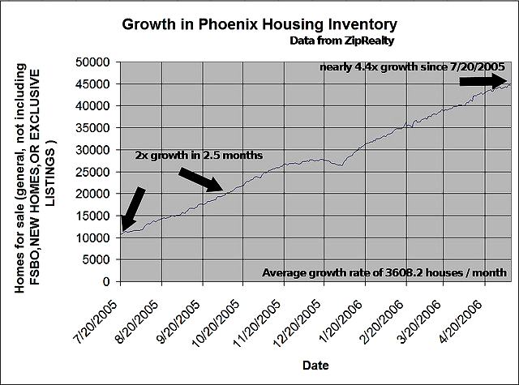
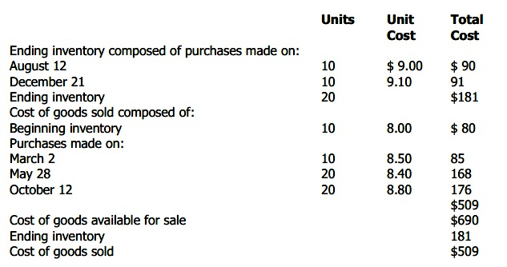
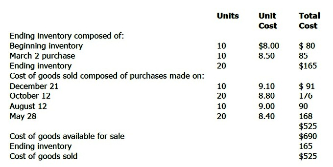

Table of Contents
5. Controlling and Reporting of Inventories
5.1. Understanding Inventory
5.1.1. Nature of Inventory
5.1.1. Categories of Goods Included in Inventory
5.1.1. Components of Inventory Cost
5.1.1. Flow of Inventory Costs
5.2. Controlling Inventory
5.2.1. Internal Controls
5.2.1. Perpetual vs. Periodic Counting
5.2.1. Conducting a Physical Inventory
5.2.1. Impact of Measurement Error
5.3. Valuing Inventory
5.3.1. Costing Methods Overview
5.3.1. Specific Identification Method
5.3.1. Cost Flow Assumptions
5.3.1. Average Cost Method
5.3.1. FIFO Method
5.3.1. LIFO Method
5.3.1. Gross Profit Method
5.3.1. Selecting an Inventory Method
5.3.1. Impacts of Costing Methods on Financial Statements
5.4. Detail on Using LIFO
5.4.1. The LIFO Reserve
5.4.1. Comparability
5.4.1. Liquidation
5.4.1. Dollar-Value LIFO
5.4.1. Advantages of LIFO
5.4.1. Disadvantages of LIFO
5.5. Additional Topics in Inventory Valuation
5.5.1. Lower of Cost or Market
5.5.1. Methods in Retail Inventory
5.6. Assessing Inventory Management
5.6.1. Efficiency Metrics
5.6.1. Impact of Inventory Method on Financial Statement Analysis
5.7. Reporting and Analyzing Inventories
5.7.1. Reporting Inventories
5.7.1. Inventory Turnover Ratio
5.7.1. Adjusting for LIFO Reserve
5. Controlling and Reporting of Inventories
5.1. Understanding Inventory
5.1.1. Nature of Inventory
Inventory represents finished and unfinished goods which have not yet been sold by a company.
Learning Objective
Explain the purpose of inventory and how a company controls and reports it
Key Points
- Inventories are maintained because time lags in moving goods to customers could put sales at risk.
- Inventories are maintained as buffers to meet uncertainties in demand, supply and movements of goods.
- There are four stages of inventory: raw material, work in progress, finished goods, and goods for resale.
- Raw materials - materials and components scheduled for use in making a product. Work in process, WIP - materials and components that have began their transformation to finished goods. Finished goods - goods ready for sale to customers. Goods for resale - returned goods that are salable.
- When a merchant buys goods from inventory, the value of the inventory account is reduced by the cost of goods sold. For commodity items that one cannot track individually, accountants must choose a method that fits the nature of the sale.
- FIFO (first in-first out) regards the first unit that arrived in inventory as the first sold. LIFO (last in-first out) considers the last unit arriving in inventory as the first sold. Using LIFO accounting for inventory a company reports lower net income and book value, resulting in lower taxation.
Key Terms
- raw material
- A material in its unprocessed, natural state considered usable for manufacture.
- inventory
- A detailed list of all of the items on hand.
- supply chain
- A system of organizations, people, technology, activities, information and resources involved in moving a product or service from supplier to customer.
Example
- A canned food manufacturer's materials inventory includes the ingredients to form the foods to be canned, empty cans and their lids (or coils of steel or aluminum for constructing those components), labels, and anything else (solder, glue, etc.) that will form part of a finished can. The firm's work in process includes those materials from the time of release to the work floor until they become complete and ready for sale to wholesale or retail customers. This may be vats of prepared food, filled cans not yet labeled or sub-assemblies of food components. It may also include finished cans that are not yet packaged into cartons or pallets. Its finished good inventory consists of all the filled and labeled cans of food in its warehouse that it has manufactured and wishes to sell to food distributors (wholesalers), to grocery stores (retailers), and even perhaps to consumers through arrangements like factory stores and outlet centers.
Definition of Inventory
Inventory represents finished and unfinished goods which have not yet been sold by a company. . Inventories are maintained as buffers to meet uncertainties in demand, supply, and movements of goods. These holdings are recorded in an accounting system .
{kind=link}
There was an interesting comment on the housing bubble blog listing "available inventory", otherwise known as the number of houses currently for sale, in Phoenix. It listed the available inventory on a daily basis from 7/20/2006 to 5/9/2006 (up to the day it was posted! )Phoenix is one of the "hot" markets of the housing bubble, but certainly isn't the top of the list. Inventory run ups like this are being seen nation wide, and are leading to price reductions (if the seller is smart) and long waits to sell as bubble flippers all try to cash out at once.
Basic Inventory Accounting
An organization's inventory counts as a current asset on an organization's balance sheet because the organization can, in principle, turn it into cash by selling it. However, it ties up money that could serve for other purposes and requires additional expense for its protection. Inventory may also cause significant tax expenses, depending on particular countries' laws regarding depreciation of inventory, as in the case of Thor Power Tool Company v. Commissioner.
Inventory Systems
There are two principal systems for determining inventory quantities on hand: periodic and perpetual system.
The Periodic System
This system requires a physical count of goods on hand at the end of a period. A cost basis (i.e., FIFO, LIFO) is then applied to derive an inventory value. Because it is simple and requires records and adjustments mostly at the end of a period, it is widely used. It does lack some of the planning and control benefits of the perpetual system.
The Perpetual System
The perpetual system requires continuous recording of receipt and disbursement for every item of inventory. Most large manufacturing and merchandising companies use this system to ensure adequate supplies are on hand for production or sale, and to minimize costly machine shut-downs and customer complaints.
Inventory Costing
Inventory cost includes all expenditures relating to inventory acquisition, preparation, and readiness for sale, minus purchase discounts.
Rationale for Keeping Inventory:
- Time - The time lags present in the supply chain, from supplier to user at every stage, requires that you maintain certain amounts of inventory to use in this lead time. However, in practice, inventory is to be maintained for consumption during 'variations in lead time'. Lead time itself can be addressed by ordering that many days in advance.
- Uncertainty - Inventories are maintained as buffers to meet uncertainties in demand, supply and movements of goods.
- Economies of scale - Ideal condition of "one unit at a time at a place where a user needs it, when he needs it" principle tends to incur lots of costs in terms of logistics. So bulk buying, movement and storing brings in economies of scale, thus inventory.
Stages of Inventory:
- Raw materials - materials and components scheduled for use in making a product.
- Work in process, WIP - materials and components that have began their transformation to finished goods.
- Finished goods - goods ready for sale to customers.
- Goods for resale - returned goods that are salable.
5.1.2. Categories of Goods Included in Inventory
Most manufacturing organizations usually divide their "goods for sale" inventory into raw materials, work in process, and finished goods.
Learning Objective
Distinguish between the raw materials, work in process, finished goods and goods for resale
Key Points
- Raw materials - Materials and components scheduled for use in making a product.
- Work in process/progress (WIP) - Materials and components that have began their transformation to finished goods.
- Finished goods - Goods ready for sale to customers.
- Goods for resale - Returned goods that are salable.
- Distressed inventory is inventory for which the potential to be sold at a normal cost has passed or will soon pass.
- Inventory credit refers to the use of stock, or inventory, as collateral to raise finance.
Key Terms
- raw materials
- A raw material is the basic material from which a product is manufactured or made.
- finished goods inventory
- the amount of completed products not yet sold or distributed to the end-user
- Finished goods
- Goods that are completed, from a manufacturing standpoint, but not yet sold or distributed to the end-user.
- work in progress
- A portion of inventory that represents goods which are no longer salable as raw materials, but not yet salable as finished goods.
- Work in process
- a company's partially finished goods waiting for completion and eventual sale or the value of these items
Example
- A canned food manufacturer's materials inventory includes the ingredients to form the foods to be canned, empty cans and their lids (or coils of steel or aluminum for constructing those components), labels, and anything else (solder, glue, etc.) that will form part of a finished can. The firm's work in process includes those materials from the time of release to the work floor until they become complete and ready for sale to wholesale or retail customers. This may be vats of prepared food, filled cans not yet labeled or sub-assemblies of food components. It may also include finished cans that are not yet packaged into cartons or pallets. Its finished good inventory consists of all the filled and labeled cans of food in its warehouse that it has manufactured and wishes to sell to food distributors (wholesalers), to grocery stores (retailers), and even perhaps to consumers through arrangements like factory stores and outlet centers.
Categories of Goods
While the reasons for holding stock were covered earlier, most manufacturing organizations usually divide their "goods for sale" inventory into several categories:
- Raw materials - Materials and components scheduled for use in making a product.
- Work in process or work in progress (WIP) - Materials and components that have began their transformation to finished goods.
- Finished goods - Goods ready for sale to customers.
- Goods for resale - Returned goods that are salable .
Raw Materials
A raw material is the basic material from which a product is manufactured or made. For example, the term is used to denote material that came from nature and is in an unprocessed or minimally processed state. Latex, iron ore, logs, crude oil, and salt water are examples of raw materials.
Work in Process (WIP)
WIP, or in-process inventory, includes unfinished items for products in a production process. These items are not yet completed, and are just being fabricated, waiting in a queue for further processing, or in a buffer storage. The term is used in production and supply chain management.
Optimal production management aims to minimize work in process. Work in process requires storage space, represents bound capital not available for investment, and carries an inherent risk of earlier expiration of the shelf life of the products. A queue leading to a production step shows that the step is well buffered for shortage in supplies from preceding steps, but may also indicate insufficient capacity to process the output from these preceding steps.
Finished Goods
Goods that are completed (manufactured) but not yet sold or distributed to the end-user.
Goods for resale
Returned goods that are salable. This is not always included in the "goods for sale" inventory; that depends on the preference of the company.
Example
A canned food manufacturer's materials inventory includes the ingredients needed to form the foods to be canned, empty cans and their lids (or coils of steel or aluminum for constructing those components), labels, and anything else (solder, glue, etc.) that will form part of a finished can. The firm's work in process includes those materials from the time of release to the work floor until they become complete and ready for sale to wholesale or retail customers. This may be vats of prepared food, filled cans not yet labeled, or sub-assemblies of food components. It may also include finished cans that are not yet packaged into cartons or pallets. The manufacturer's finished good inventory consists of all the filled and labeled cans of food in its warehouse that it has manufactured and wishes to sell to food distributors (wholesalers), to grocery stores (retailers), and even perhaps to consumers through arrangements like factory stores and outlet centers.
5.1.3. Components of Inventory Cost
The cost of goods produced in the business should include all costs of production: parts, labor, and overhead.
Learning Objective
Identify the components used to calculate the cost of goods sold
Key Points
- Labor costs include direct labor and indirect labor. Direct labor costs are the wages paid to those employees who spend all their time working directly on the product being manufactured. Indirect labor costs are the wages paid to other factory employees involved in production.
- Overhead costs (costs incurred at the plant or organization level) are often allocated to sets of produced goods based on the ratio of labor hours or costs or the ratio of materials used for producing the set of goods.
- Most businesses make more than one of a particular item. Thus, costs are incurred for multiple items rather than a particular item sold. Parts and raw materials are often tracked to particular sets (e.g., batches or production runs) of goods, then allocated to each item.
Key Terms
- raw materials
- A raw material is the basic material from which a product is manufactured or made.
- labor
- Effort expended on a particular task; toil, work.
- overhead
- Any cost or expenditure (monetary, time, effort or otherwise) incurred in a project or activity, that does not directly contribute to the progress or outcome of the project or activity.
Cost of Goods
The cost of goods produced in the business should include all costs of production. The key components of cost generally include:
- Parts, raw materials and supplies used,
- Labor, including associated costs such as payroll taxes and benefits, and
- Overhead of the business allocable to production.
Most businesses make more than one of a particular item. Thus, costs are incurred for multiple items rather than a particular item sold. Determining how much of each of these components to allocate to particular goods requires either tracking the particular costs or making some allocations of costs.
Parts and Raw Materials
Parts and raw materials are often tracked to particular sets (e.g., batches or production runs) of goods, then allocated to each item.
Labor
Labor costs include direct labor and indirect labor. Direct labor costs are the wages paid to those employees who spend all their time working directly on the product being manufactured. Indirect labor costs are the wages paid to other factory employees involved in production. Costs of payroll taxes and fringe benefits are generally included in labor costs, but may be treated as overhead costs. Labor costs may be allocated to an item or set of items based on timekeeping records.
Overhead Costs
Determining overhead costs often involves making assumptions about what costs should be associated with production activities and what costs should be associated with other activities. Traditional cost accounting methods attempt to make these assumptions based on past experience and management judgment as to factual relationships. Activity based costing attempts to allocate costs based on those factors that drive the business to incur the costs.

Image of the accounting cycle
Overhead costs are often allocated to sets of produced goods based on the ratio of labor hours or costs or the ratio of materials used for producing the set of goods. Overhead costs may be referred to as factory overhead or factory burden for those costs incurred at the plant level or overall burden for those costs incurred at the organization level. Where labor hours are used, a burden rate or overhead cost per hour of labor may be added along with labor costs. Other methods may be used to associate overhead costs with particular goods produced. Overhead rates may be standard rates, in which case there may be variances, or may be adjusted for each set of goods produced.
Variable Production Overheads
Variable production overheads are allocated to units produced based on actual use of production facilities. Fixed production overheads are often allocated based on normal capacities or expected production. More or fewer goods may be produced than expected when developing cost assumptions (like burden rates). These differences in production levels often result in too much or too little cost being assigned to the goods produced. This also gives rise to variances.
Example
Jane owns a business that resells machines. At the start of 2009, she has no machines or parts on hand. She buys machines $A$ and $B$ for \$10 each, and later buys machines $C$ and $D$ for \$12 each. All the machines are the same, but they have serial numbers. Jane sells machines $A$ and $C$ for \$20 each. Her cost of goods sold depends on her inventory method. Under specific identification, the cost of goods sold is:
which is the particular costs of machines $A$ and $C$ . If she uses FIFO, her costs are:
If she uses average cost, her costs are:
If she uses LIFO, her costs are:
Thus, her profit for accounting and tax purposes may be \$20, \$18, or \$16, depending on her inventory method.
5.1.4. Flow of Inventory Costs
Accounting techniques are used to manage assumptions of cost flows related to inventory and stock repurchases.
Learning Objective
Discuss how a company uses LIFO or FIFO to calculate the cost of inventory
Key Points
- Accounting techniques are used to manage inventory and financial matters - how much money a company has tied up within inventory of produced goods, raw materials, parts, components, etc. These techniques manage assumptions of cost flows related to inventory and stock repurchases .
- FIFO stands for first-in, first-out, meaning that the oldest inventory items are recorded as sold first, but do not necessarily mean that the exact oldest physical object has been tracked and sold.
- LIFO stands for last-in first-out. The most recently produced items are recorded as sold first. Since the 1970's, companies shifted towards the use of LIFO, which reduces their income taxes. The International Financial Reporting Standards banned using LIFO, so companies returned to FIFO.
Key Terms
- accounting
- The development and use of a system for recording and analyzing the financial transactions and financial status of a business or other organization.
- FIFO
- First in, first out (accounting).
- LIFO
- Last-in, first-out (accounting).
Example
- A canned food manufacturer's materials inventory includes the ingredients to form the foods to be canned, empty cans and their lids (or coils of steel or aluminum for constructing those components), labels, and anything else (solder, glue, etc.) that will form part of a finished can. The firm's work in process includes those materials from the time of release to the work floor until they become complete and ready for sale to wholesale or retail customers. This may be vats of prepared food, filled cans not yet labeled or sub-assemblies of food components. It may also include finished cans that are not yet packaged into cartons or pallets. Its finished goods inventory consists of all the filled and labeled cans of food in its warehouse that it has manufactured and wishes to sell to food distributors (wholesalers), to grocery stores (retailers), and even perhaps to consumers through arrangements like factory stores and outlet centers.
FIFO and LIFO methods are accounting techniques used in managing inventory and financial matters involving the amount of money a company has tied up within inventory of produced goods, raw materials, parts, components, or feed stocks. These methods are used to manage assumptions of cost flows related to inventory, stock repurchases (if purchased at different prices), and various other accounting purposes.

The accounting cycle (flows).
FIFO stands for first-in, first-out, meaning that the oldest inventory items recorded first are sold first, but does not necessarily mean that the exact oldest physical object has been tracked and sold.
- An example of how to calculate the ending inventory balance of the period using FIFO -- assume the following inventory is on hand and purchased on the following dates:
- Inventory of Product X -
- Purchase date: 10/1/12 -- 10 units at a cost of USD 5
- Purchase date: 10/5/12 -- 5 units at a cost of USD 6
- On 12/30/12, a sale of Product X is made for 11 units
- When the sale is made, it is assumed that the 10 units purchased on 10/1/12 (the sale eliminates this inventory layer) and 1 unit purchased on 10/5/12 were sold
- The ending inventory balance on 12/31/12, is 4 units at a cost of USD 6
LIFO stands for last-in, first-out, meaning that the most recently produced items are recorded as sold first. Since the 1970's, some U.S. companies shifted towards the use of LIFO, which reduces their income taxes in times of inflation. However, with International Financial Reporting Standards banning the use of LIFO, more companies have gone back to FIFO. LIFO is only used in Japan and the United States.
- An example of how to calculate the ending inventory balance of the period using LIFO -- assume the following inventory is on hand and purchased on the following dates:
- Inventory of Product X -
- Purchase date: 10/1/12 -- 10 units at a cost of USD 5
- Purchase date: 10/5/12 -- 5 units at a cost of USD 6
- On 12/30/12, a sale of Product X is made for 11 units
- When the sale is made, it is assumed that the 5 units purchased on 10/5/12 (the sale eliminates this inventory layer) and 6 units purchased on 10/1/12 were sold
- The ending inventory balance on 12/31/12, is 4 units at a cost of USD 5
Differences between Inventory Costing Methods
The difference between the cost of an inventory calculated under the FIFO and LIFO methods is called the LIFO reserve. This reserve is essentially the amount by which an entity's taxable income has been deferred by using the LIFO method.
Differences in Periods of Rising Prices (Inflation)
- FIFO (+) Higher value of inventory (-) Lower cost of goods sold
- LIFO (-) Lower value of inventory (+) Higher cost of goods sold
Differences in Periods of Falling Prices (Deflation)
- FIFO (-) Lower value of inventory (+) Higher cost of goods sold
- LIFO (+) Higher value on inventory (-) Lower cost on goods sold
Methods of Preparing Cash Flow Statements
- The direct method of preparing a cash flow statement results in report that is easier to understand. It creates a cash flow statement report using major classes of gross cash receipts and payments.
- The indirect method is almost universally used because FAS 95 requires a supplementary report similar to the indirect method if a company chooses to use the direct method. It uses net-income as a starting point, makes adjustments for all transactions for non-cash items, then adjusts from all cash-based transactions. An increase in an asset account is subtracted from net income. An increase in a liability account is added back to net income. This method converts accrual-basis net income (or loss) into cash flow by using a series of additions and deductions.
5.2. Controlling Inventory
5.2.1. Internal Controls
Inventory internal controls ensure that a company has sufficient resources to meet its customers' needs without having too much goods.
Learning Objective
Explain how a company would use storage, inventory management systems and inventory counts to control inventory
Key Points
- Companies should store inventory in secure spacious warehouses so that inventory is not stolen or damaged. Goods and resources of the same or similar type should be kept in the same general area of the warehouse to minimize confusion and to ensure accurate counts.
- An inventory management system is a series of procedures, often aided by computer software, that tracks assets progression through inventory. A properly used and maintained inventory management system allows management to be able to know how much inventory it has at any given time.
- Detailed physical inventory counts are a way of ensuring that a company's inventory management system is accurate and as a check to make sure goods are not being lost or stolen. A physical count of a company's entire inventory is generally taken prior to the issuance of a company's balance sheet.
- To conduct a cycle count, an auditor will select a small subset of inventory, in a specific location, and count it on a specified day. The auditor will then compare the count to the related information in the inventory management system to ensure the information in the system is correct.
Key Terms
- internal auditor
- one who conducts an independent, objective assurance and consulting activity designed to add value and improve an organization's operations
- physical inventory count
- Physical inventory is a process where a business physically counts its entire inventory. A physical inventory may be mandated by financial accounting rules or the tax regulations to place an accurate value on the inventory, or the business may need to count inventory so component parts or raw materials can be restocked. Businesses may use several different tactics to minimize the disruption caused by physical inventory.
- cycle counts
- Process by which an auditor selects a small subset of inventory and counts it to ensure that it matches the information in the company's inventory management system. Meant to test the accuracy of inventory system.
Internal controls over a company's inventory are meant to ensure that management has an accurate count of what materials and goods it has available for sale and to protect those goods from being spoiled, stolen or otherwise made unavailable for sale. In short, inventory internal controls are meant to ensure that a company always has sufficient resources to produce and sell goods to meet its customers' needs without having oversupply.
This process is affected by the company's structure, its employees, and its informational systems. Since a company's inventory is directly tied to the business's ability to generate profit, the internal controls must be comprehensive and require significant thought when being designed.
Storage
Companies should store inventory in secure, spacious warehouses so that inventory is not stolen or damaged. Goods and resources of the same or similar type should be kept in the same general area of the warehouse to minimize confusion and to ensure accurate counts.
Inventory Management Systems
An inventory management system is a series of procedures, often aided by computer software, that tracks assets progression through inventory. For example, assume a set amount of raw material is acquired by the company. When the company receives that material, the amount should be noted in the inventory management system. As the material is processed into the goods for resale, the amount of raw material used should be deducted from the "raw material inventory" and the amount of goods that result from the process should be added to the "finished goods inventory. " As each finished item is sold, the "finished goods inventory" should be decreased by that amount.
The benefit of a properly used and maintained inventory management system is that it allows management to be able to know how much inventory it has at any given time.
Physical Inventory Count
Physical inventory counts are a way of ensuring that a company's inventory management system is accurate and as a check to make sure goods are not being lost or stolen. A detailed physical count of a company's entire inventory is generally taken prior to the issuance of a company's balance sheet, to ensure that the company accurately report its inventory levels.
Cycle Counts
Companies usually conduct cycle counts periodically throughout an accounting period as a means to ensure that the information in its inventory management system is correct. To conduct a cycle count, an auditor will select a small subset of inventory, in a specific location, and count it on a specified day. The auditor will then compare the count to the related information in the inventory management system. If the counts match, no further action is taken. If the numbers differ, the auditor will take additional steps to determine why the counts do not match.
Cycle counts contrast with traditional physical inventory in that a full physical inventory may stop operation at a facility while all items are counted at one time. Cycle counts are less disruptive to daily operations, provide an ongoing measure of inventory accuracy and procedure execution, and can be tailored to focus on items with higher value, higher movement volume, or that are critical to business processes. Cycle counting should only be performed in facilities with a high degree of inventory accuracy.
5.2.2. Perpetual vs. Periodic Counting
Perpetual inventory updates the quantities continuously and periodic inventory updates the amount only at specific times, such as year end.
Learning Objective
Explain the differences between perpetual inventory and periodic inventory
Key Points
- Perpetual inventory, also called continuous inventory, is when information about amount and availability of the product is updated continuously, usually via computer.
- Periodic inventory is a system of inventory in which updates are made on a periodic basis.
- Theft, breakage, or untracked movement can cause the perpetual inventory to be inaccurate.
Key Terms
- periodic inventory system
- accounting for goods and materials held for eventual sale that is not continually updated
- perpetual
- Continuing uninterrupted
- breakage
- Something that has been broken.
Perpetual Inventory
Perpetual inventory, also called continuous inventory, is when information about amount and availability of a product is updated continuously. Generally, this is accomplished by connecting the inventory system either with the order entry system or for a retail establishment the point of sale system.
A company using the perpetual inventory system would have a book inventory that is exactly (within a small margin of error) the same as the physical (real) inventory.
Periodic Inventory
Periodic inventory is when information about amount and availability of a product is updated only periodically. Physical inventories are conducted at set time intervals; both cost of goods sold and the inventory are adjusted at the time of the physical inventory. Most companies who use periodic inventory perform this at year-end.
Periodic vs. Perpetual
In earlier periods, non-continuous or periodic inventory systems were more prevalent. Many small businesses still only have a periodic system of inventory.
Perpetual inventory systems can still be vulnerable to errors due to overstatements (phantom inventory) or understatements (missing inventory) that occurs as a result of theft, breakage, scanning errors, or untracked inventory movements. These errors lead to systematic errors in replenishment.
While the perpetual inventory method provides a close picture of the true inventory information, it is a good idea for companies using a perpetual inventory system to do a physical inventory periodically.
5.2.3. Conducting a Physical Inventory
There are three phases of a physical inventory: planning and preparation, execution, and analysis of results.
Learning Objective
Identify the three phases of a physical inventory
Key Points
- Physical inventory is a process where a business physically counts its entire inventory.
- In the planning and preparation period, a list of stocks which is supposed to be counted are set up. Different teams are then assigned to count the stock.
- Each team counts a specific inventory. The results are recorded on the inventory listing sheet.
- The physicial count is compared to the computer count. The company must note any discrepancies between the actual number and the computer system, recount these inventory items to determine the correct quantity, and adjust the computer inventory quantity if needed.
- Any discrepancies between the actual number and the computer system must be fixed.
Key Terms
- perpetual inventory system
- Perpetual inventory or continuous inventory updates information on inventory quantity and availability on a continuous basis as a function of doing business. Generally this is accomplished by connecting the inventory system with order entry and in retail the point of sale system.
- cycle counting
- A cycle count is an inventory auditing procedure, which falls under inventory management, where a small subset of inventory, in a specific location, is counted on a specified day. Cycle counts contrast with traditional physical inventory in that a full physical inventory may stop operation at a facility while all items are counted at one time. Cycle counts are less disruptive to daily operations, provide an ongoing measure of inventory accuracy and procedure execution, and can be tailored to focus on items with higher value, higher movement volume, or that are critical to business processes.
Conducting a Physical Inventory
Physical inventory is a process where a business physically counts its entire inventory. Companies perform a physical inventory for several reasons including to satisfy financial accounting rules or tax regulations, or to compile a list of items for restocking.
Most companies choose to do a physical inventory at year-end.
Businesses may use several different tactics to minimize the disruption caused by physical inventory. For instance, inventory services provide labor and automation to quickly count inventory and minimize shutdown time.
In addition, inventory control system software can speed the physical inventory process . A perpetual inventory system tracks the receipt and use of inventory, and calculates the quantity on hand. Cycle counting, an alternative to physical inventory, may be less disruptive. An inventory control system ensures that the company's books reflect the actual inventory on hand.
The Phases Of Physical Inventory
There are three phases of a physical inventory:
- Planning and preparation
- Execution
- Analysis of results
Planning and Preparation
In the planning and preparation period, a list of stocks that need to be counted is set up. Teams are then assigned and sent to count the stock.
Execution
The teams count the inventory items and record the results on an inventory-listing sheet.
Analysis Of Results
When analyzing the results, a company must compare the inventory counts submitted by each team with the inventory count from the computer system. If any discrepancies occur between the actual number and the computer system, it may be necessary to recount the disputed inventory items to determine the correct quantity. After the final amounts are determined, the company must make an adjusting entry to the computer inventory.
5.2.4. Impact of Measurement Error
Measurement error leads to systematic errors in replenishment and inaccurate financial statements.
Learning Objective
Explain how a measurement error affects a company's inventory value
Key Points
- In inventory controlling, measurement error is the difference between the actual number of stocks and the value obtained by measurement.
- Inventory systems can be vulnerable to errors due to overstatements (phantom inventory) or understatements (missing inventory). Overstatements and understatements can occur as a result of theft, breakage, scanning errors or untracked inventory movements.
- Based on inaccurate measurement data, the company will make either excessive orders or late orders which then may cause production disruption. In sum, systematic measurement error can lead to errors in replenishment.
- An incorrect inventory balance causes an error in the calculation of cost of goods sold and, therefore, an error in the calculation of gross profit and net income.
Key Term
- phantom inventory
- Phantom inventory is a common expression for goods that an inventory accounting system considers to be on-hand at a storage location, but are not actually available. This could be due to the items being moved without recording the change in the inventory accounting system, breakage, theft data entry errors or deliberate fraud. The resulting discrepancy between the online inventory balance and physical availability can delay automated reordering and lead to out-of-stock incidents. If not addressed, phantom inventory can also result in broader accounting issues and restatements.
Measurement Error Impacts
Measurement error is the difference between the true value of a quantity and the value obtained by measurement. The two main types of error are random errors and systematic errors. In inventory controlling, measurement error is the difference between the actual number of stocks and the value obtained by measurement.
Inventory systems can be vulnerable to errors due to overstatements (phantom inventory) when the actual inventory is lower than the measurement or understatements (missing inventory) when the actual stocks are higher than the measurement. Overstatements and understatements can occur as a result of theft, breakage, scanning errors or untracked inventory movements. It is quite easy to overlook goods on hand, count goods twice, or simply make mathematical mistakes.
Based on inaccurate measurement data, the company will make either excessive orders or late orders which then may cause production disruption. In sum, systematic measurement error can lead to errors in replenishment.
Inventory controlling helps revenue and expenses be recognized. As a result, an incorrect inventory balance causes an error in the calculation of cost of goods sold and, therefore, an error in the calculation of gross profit and net income. A general rule is that overstatements of ending inventory cause overstatements of income, while understatements of ending inventory cause understatements of income. Since financial statement users depend upon accurate statements, care must be taken to ensure that the inventory balance at the end of each accounting period is correct. It is also vital that accountants and business owners fully understand the effects of inventory errors and grasp the need to be careful to get these numbers as correct as possible.
5.3. Valuing Inventory
5.3.1. Costing Methods Overview
There are four accepted methods of costing items: specific identification; first-in, first-out; last-in, first-out; and weighted-average.
Learning Objective
Review the differences between the four cost accounting methods and demonstrate how to calculate the cost of goods sold
Key Points
- Cost accounting is regarded as the process of collecting, analyzing, summarizing, and evaluating various alternative courses of action involving costs and advising the management on the most appropriate course of action based on the cost efficiency and capability of the management.
- The specific identification method of inventory costing attaches the actual cost to an identifiable unit of product. Firms find this method easy to apply when purchasing and selling large inventory items such as cars.
- The FIFO (first-in, first-out) method of inventory costing assumes that the costs of the first goods purchased are those charged to cost of goods sold when the company actually sells goods.
- The LIFO (last-in, first-out) method of inventory costing assumes that the costs of the most recent purchases are the first costs charged to cost of goods sold when the company actually sells the goods.
- The weighted-average method of inventory costing is a means of costing ending inventory using a weighted-average unit cost. Companies most often use the weighted-average method to determine a cost for units that are basically the same.
- Beginning Inventory + Purchases = Available for Sale - Ending Inventory = Cost of Good Sold.
Key Terms
- inventory
- A detailed list of all of the items on hand.
- costing
- The estimation of the cost of a process or product.
- raw materials
- A raw material is the basic material from which a product is manufactured or made.
Costing Methods Overview
Cost accounting information is designed for managers. Since managers are making decisions only for their own organization, there is no need for the information to be comparable to similar information from other organizations. Instead, the important criterion is that the information must be relevant for decisions that managers, operating in a particular environment of business including strategy, make. Cost accounting information is commonly used in financial accounting information, but first we are concentrating on its use by managers to take decisions. The accountants who handle the cost accounting information add value by providing good information to managers who are making decisions. Among the better decisions, is the better performance of one's organization, regardless if it is a manufacturing company, a bank, a non-profit organization, a government agency, a school club or even a business school. The cost-accounting system is the result of decisions made by managers of an organization and the environment in which they make them .
Cost accounting is regarded as the process of collecting, analyzing, summarizing, and evaluating various alternative courses of action involving costs and advising the management on the most appropriate course of action based on the cost efficiency and capability of the management.
The following are different cost accounting approaches:
- standardized or standard cost accounting
- lean accounting
- activity-based costing
- resource consumption accounting
- throughput accounting
- marginal costing/cost-volume-profit analysis
Classical cost elements for a manufacturing business are:
- Raw materials
- Labor
- Indirect expenses/overhead
Accepted Financial Costing Methods
There are four accepted methods of costing inventory items:
- specific identification;
- first-in, first-out (FIFO);
- last-in, first-out (LIFO); and
- weighted-average.
Each method has advantages and disadvantages. Note that a manufacturing business's inventory will consist of work in process, or unfinished goods, and finished inventory; the costs of unfinished and finished inventory contain a combination of costs related to raw materials, labor, and overhead. On the other hand, a retailer's inventory consists of all finished products purchased from a wholesaler or manufacturer; the costs of their units are based on their acquisition cost rather than the costs associated with manufacturing units.
Specific Identification
The specific identification method of inventory costing attaches the actual cost to an identifiable unit of product. Firms find this method easy to apply when purchasing and selling large inventory items such as cars. Under the specific identification method, the firm must identify each unit in inventory, unless it is unique, with a serial number or identification tag.
FIFO (first-in, first-out)
The FIFO (first-in, first-out) method of inventory costing assumes that the costs of the first goods purchased are those charged to cost of goods sold when the company actually sells goods. This method assumes the first goods purchased are the first goods sold. In some companies, the first units in (bought) must be the first units out (sold) to avoid large losses from spoilage. Such items as fresh dairy products, fruits, and vegetables should be sold on a FIFO basis. In these cases, an assumed first-in, first-out flow corresponds with the actual physical flow of goods.
LIFO (last-in, first-out)
The LIFO (last-in, first-out) method of inventory costing assumes that the costs of the most recent purchases are the first costs charged to cost of goods sold when the company actually sells the goods.
Weighted-average
The weighted-average method of inventory costing is a means of costing ending inventory using a weighted-average unit cost. Companies most often use the weighted-average method to determine a cost for units that are basically the same, such as identical games in a toy store or identical electrical tools in a hardware store. Since the units are alike, firms can assign the same unit cost to them.
Calculating Cost of Goods Sold (periodic method)
Beginning Inventory + Purchases = Available for Sale
Available - Ending Inventory = Cost of Good Sold
5.3.2. Specific Identification Method
Specific identification is a method of finding out ending inventory cost that requires a detailed physical count.
Learning Objective
Describe how a company would use the specific identification method to value inventory
Key Points
- Specific identification is a method of finding out ending inventory cost. It requires a detailed physical count, so that the company knows exactly how many of each goods brought on specific dates remained at year end inventory.
- In theory, this method is the best method, since it relates the ending inventory goods directly to the specific price they were bought for. However, management can easily manipulate ending inventory cost, since they can choose to report that cheaper goods were sold first, ultimately raising income.
- Alternatively, management can choose to report lower income, to reduce the taxes they needed to pay.
Key Terms
- serial number
- A unique number, assigned to a particular unit of some product, to identify it.
- inventory
- A detailed list of all of the items on hand.
- accounting
- The development and use of a system for recording and analyzing the financial transactions and financial status of a business or other organization.
- specific identification method
- inventory measurement based on the exact number of goods in inventory and their purchase price
Example
- Assume that the company in can identify the 20 units on hand at year-end as 10 units from the August 12 purchase and 10 units from the December 21 purchase. The company computes the ending inventory as shown in. It subtracts the USD 181 ending inventory cost from the USD 690 cost of goods available for sale to obtain the USD 509 cost of goods sold. Note that you can also determine the cost of goods sold for the year by recording the cost of each unit sold. The USD 509 cost of goods sold is an expense on the income statement, and the USD 181 ending inventory is a current asset on the balance sheet. The specific identification costing method attaches cost to an identifiable unit of inventory. The method does not involve any assumptions about the flow of the costs as in the other inventory costing methods. Conceptually, the method matches the cost to the physical flow of the inventory and eliminates the emphasis on the timing of the cost determination. Therefore, periodic and perpetual inventory procedures produce the same results for the specific identification method.
Types of Accounting Methods
The merchandise inventory figure used by accountants depends on the quantity of inventory items and the cost of the items. There are four accepted methods of costing the items: (1) specific identification; (2) first-in, first-out (FIFO); (3) last-in, first-out (LIFO); and (4) weighted-average. Each method has advantages and disadvantages.
General Information
Specific identification is a method of finding out ending inventory cost. It requires a detailed physical count, so that the company knows exactly how many of each goods brought on specific dates remained at year-end inventory. When this information is found, the amount of goods is multiplied by their purchase cost at their purchase date, to get a number for the ending inventory cost.
In theory, this method is the best method because it relates the ending inventory goods directly to the specific price they were bought for. However, this method allows management to easily manipulate ending inventory cost, since they can choose to report that the cheaper goods were sold first, therefore increasing ending inventory cost and lowering cost of goods sold. This will increase the income.
Alternatively, management can choose to report lower income, to reduce the taxes they needed to pay. This method is also a very hard to use on interchangeable goods. For example, it is hard to relate shipping and storage costs to a specific inventory item. These numbers will need to be estimated and reducing the specific identification's benefit of being extremely specific.
Using Specific Identification
The specific identification method of inventory costing attaches the actual cost to an identifiable unit of product. Firms find this method easy to apply when purchasing and selling large inventory items such as cars. Under the specific identification method, the firm must identify each unit in inventory, unless it is unique, with a serial number or identification tag.
To illustrate, assume that the company in can identify the 20 units on hand at year-end as 10 units from the August 12 purchase and 10 units from the December 21 purchase. The company computes the ending inventory as shown in ; it subtracts the USD 181 ending inventory cost from the USD 690 cost of goods available for sale to obtain the USD 509 cost of goods sold. Note that you can also determine the cost of goods sold for the year by recording the cost of each unit sold. The USD 509 cost of goods sold is an expense on the income statement, and the USD 181 ending inventory is a current asset on the balance sheet. The specific identification costing method attaches cost to an identifiable unit of inventory. The method does not involve any assumptions about the flow of the costs as in the other inventory costing methods. Conceptually, the method matches the cost to the physical flow of the inventory and eliminates the emphasis on the timing of the cost determination. Therefore, periodic and perpetual inventory procedures produce the same results for the specific identification method.
{kind=link}
Determining ending inventory under specific identification
5.3.3. Cost Flow Assumptions
Inventory cost flow assumptions (e.g., FIFO) are necessary to determine the cost of goods sold and ending inventory.
Learning Objective
Explain how a company's inventory cost flow assumptions dictate which method it will use for inventory valuation
Key Points
- Companies make certain assumptions about which goods are sold and which goods remain in inventory (resulting in different accounting methodologies).
- The only requirement, regardless of method is that: The total cost of goods sold plus the cost of the goods remaining in ending inventory for financial and tax purposes is equal to the actual cost of goods available.
- Cost flow assumptions are for financial reporting and tax purposes only and do not have to agree with the actual movement of goods.
Key Terms
- inventory
- A detailed list of all of the items on hand.
- assumption
- The thing supposed; a postulate, or proposition assumed; a supposition.
- COGS
- COGS (cost of goods sold) is the inventory costs of those goods a business has sold during a particular period.
Example
- FIFO assigns first costs incurred to COGS (cost of goods sold) on the income statement. This disallows manipulation by management and cost flow agrees with ideal, physical flow of goods. Some may argue that the agreement of cost flow and ideal, physical flow of goods is not important. FIFO also uses the least relevant cost for the income statement and underestimates or overestimates the cost of goods sold if prices are rising or falling, respectively.
Cost Flow Assumptions
Inventory cost flow assumptions are necessary to determine the cost of goods sold and ending inventory. Companies make certain assumptions about which goods are sold and which goods remain in inventory (resulting in different accounting methodologies). This is for financial reporting and tax purposes only and does not have to agree with the actual movement of goods (companies typically choose a method because of its particular benefits, such as lower taxes) .
The only requirement, regardless of method is that: The total cost of goods sold plus the cost of the goods remaining in the ending inventory for financial and tax purposes is equal to the actual cost of goods available.
Specific Identification
Characteristics of the specific identification method include:
- Keeps track of the cost of each, specific good sold
- Perfect matching of costs of goods to goods sold
- Often impossible or too costly and allows manipulation by management
FIFO
Characteristics of the FIFO method include:
- Assigns first costs incurred to COGS (cost of goods sold) on the income statement
- Disallows manipulation by management and cost flow agrees with ideal, physical flow of goods, though the agreement of cost flow and ideal, physical flow of goods is arguably not important
- Uses the least relevant cost for the income statement and underestimates or overestimates the cost of goods sold if prices are rising or falling, respectively
LIFO
Characteristics of the LIFO method include:
- Assigns last costs incurred to COGS on the income statement
- Disallows manipulation by management and uses the most relevant cost for the income statement
- Underestimates or overestimates cost of goods sold if prices are falling or rising, respectively and cost flow disagrees with ideal, physical flow of goods, though the agreement of cost flow and ideal, physical flow of goods is arguably not important
Weighted Average
Characteristics of the weighted average method include:
- Assigns average cost incurred to COGS on the income statement
- Disallows manipulation by management and better estimation of the cost of goods sold than FIFO or LIFO if prices are rising or falling
- Tends to ignore extreme costs of inventory and there is no theoretical reasoning for using this method
Additional Notes
LIFO and weighted average cost flow assumptions may yield different end inventories and COGS in a perpetual inventory system than in a periodic inventory system due to the timing of the calculations. In the perpetual system, some of the oldest units calculated in the periodic units-on-hand ending inventory may get expended during a near inventory exhausting individual sale. In the LIFO system, the weighted average system, and the perpetual system, each sale moves the weighted average, so it is a moving weighted average for each sale. In contrast, in the periodic system, it is only the weighted average of the cost of the beginning inventory, the sum cost of all the purchases, less than the cost of the inventory, divided by the sum of the beginning units and the total units purchased.
5.3.4. Average Cost Method
Under the Average Cost Method, It is assumed that the cost of inventory is based on the average cost of the goods available for sale during the period.
Learning Objective
Explain how a company uses the average cost method to value their inventory
Key Points
- Under the average cost method, it is assumed that the cost of inventory is based on the average cost of the goods available for sale during the period.The average cost is computed by dividing the total cost of goods available for sale by the total units available for sale.
- The weighted-average method of inventory costing is a means of costing ending inventory using a weighted-average unit cost. Companies most often use the weighted-average method to determine a cost for units that are basically the same, such as identical games in a toy store.
- Moving-Average (Unit) Cost is a method of calculating Ending Inventory cost. Assume that both Beginning Inventory and beginning inventory cost are known. From them the Cost per Unit of Beginning Inventory can be calculated.
Key Terms
- COGS
- COGS (cost of goods sold) is the inventory costs of those goods a business has sold during a particular period.
- weighted average
- An arithmetic mean of values biased according to agreed weightings.
- average collection period
- 365 divided by the receivables turnover ratio
- inventory
- A detailed list of all of the items on hand.
- depreciable cost
- original cost minus salvage value
Example
- To see how a company uses the weighted-average method to determine inventory costs using periodic inventory procedure, look at. Note that we compute weighted average cost per unit by dividing the cost of units available for sale, \$690, by the total number of units available for sale, 80. Thus, the weighted-average cost per unit is \$8.625, meaning that each unit sold or remaining in inventory is valued at \$8.625.
Average Cost Method
Under the average cost method, it is assumed that the cost of inventory is based on the average cost of the goods available for sale during the period. The average cost is computed by dividing the total cost of goods available for sale by the total units available for sale. This gives a weighted-average unit cost that is applied to the units in the ending inventory. There are two commonly used average cost methods: Simple Weighted Average Cost method and Moving-Average Cost method.
The following is an example of the weighted average cost method:
- On 12/31/12, Furniture Palace has cost of goods available for sale (beginning inventory and purchases) of USD 5,000; 200 units available for sale; sales of 50 units; and an ending inventory of 150 units.
- The per unit cost of inventory is USD 25 (5,000 / 200 units). The value of the ending inventory on the balance sheet is USD 3,750 (150 units * USD 25). The cost of goods sold on the income statement is USD 1,250 (50 units * USD 25).
Moving Average Cost
Moving-Average (Unit) Cost is a method of calculating Ending Inventory cost. Assume that both Beginning Inventory and Beginning Inventory Cost are known. From them, the Cost per Unit of Beginning Inventory can be calculated. During the year, multiple purchases are made. Each time, purchase costs are added to Beginning Inventory Cost to get Cost of Current Inventory. Similarly, the number of units bought is added to Beginning Inventory to get Current Goods Available for Sale. After each purchase, Cost of Current Inventory is divided by Current Goods Available for Sale to get Current Cost per Unit on Goods.
Also during the year, multiple sales happen. The Current Goods Available for Sale is deducted by the amount of goods sold (COGS), and the Cost of Current Inventory is deducted by the amount of goods sold times the latest (before this sale) Current Cost per Unit on Goods. This deducted amount is added to Cost of Goods Sold. At the end of the year, the last Cost per Unit on Goods, along with a physical count, is used to determine ending inventory cost.
The following is an example of the moving-average cost method:
On 12/29/12, Furniture Palace has beginning inventory of \$5,000 and 200 units available for sale. The current cost per unit is $\frac{\$5000}{200\text{ units}}=\$25$ .
On 12/30/12, a purchase of 50 units is made for \$250. The new cost per unit after the purchase is $\frac{\$5000 + \$250}{200 + 50} = \$21$ .
On 12/31/12, sales for the period were 50 units and ending inventory is 150 units. The value of the ending inventory on the balance sheet is $150\text{ units} \cdot \$21 = \$3150$ . The cost of goods sold on the income statement is $50\text{ units} \cdot \$21 = \$1050$ .
Weighted-Average under Periodic Inventory Procedure
The Weighted-Average Method of inventory costing is a means of costing ending inventory using a weighted-average unit cost. Companies most often use the Weighted-Average Method to determine a cost for units that are basically the same, such as identical games in a toy store or identical electrical tools in a hardware store. Since the units are alike, firms can assign the same unit cost to them. Under periodic inventory procedure, a company determines the average cost at the end of the accounting period by dividing the total units purchased plus those in beginning inventory into total cost of goods available for sale. The ending inventory is carried at this per unit cost.
Advantages and Disadvantages of Weighted-Average Method
When a company uses the Weighted-Average Method and prices are rising, its cost of goods sold is less than that obtained under LIFO, but more than that obtained under FIFO. Inventory is also not as badly understated as under LIFO, but it is not as up-to-date as under FIFO. Weighted-average costing takes a middle-of-the-road approach. A company can manipulate income under the weighted-average costing method by buying or failing to buy goods near year-end. However, the averaging process reduces the effects of buying or not buying.
{kind=link}
Determining ending inventory under weighted-average method using periodic inventory procedure
5.3.5. FIFO Method
FIFO stands for "first-in, first-out," and assumes that the costs of the first goods purchased are charged to cost of goods sold.
Learning Objective
Describe how a company would value inventory under the FIFO method
Key Points
- This method assumes the first goods purchased are the first goods sold. In some companies, the first units in (bought) must be the first units out (sold) to avoid large losses from spoilage.
- In periods of rising prices (Inflation) FIFO has higher value of inventory and lower cost of goods sold; in periods of falling prices (deflation) it has lower value of inventory and higher cost of goods sold.
- Because a company using FIFO assumes the older units are sold first and the newer units are still on hand, the ending inventory consists of the most recent purchases.
Key Terms
- accounting
- The development and use of a system for recording and analyzing the financial transactions and financial status of a business or other organization.
- inflation
- An increase in the quantity of money, leading to a devaluation of existing money.
- FIFO
- First in, first out (accounting).
Example
- An example of how to calculate the ending inventory balance and cost of goods sold of the period using FIFO -- assume the following inventory is on hand and purchased on the following dates: Inventory of Product X -Purchase date: 10/1/12 -- 10 units at a cost of USD 5 Purchase date: 10/5/12 -- 5 units at a cost of USD 6 On 12/30/12, a sale is made of Product X for 11 units. Under FIFO, it is assumed that 10 units purchased on 10/1/12 (the sale also eliminates this inventory layer) and 1 unit purchased on 10/5/12 were sold The ending inventory balance on the 12/31/12 balance sheet is 4 units at a cost of USD 6, or USD 24 and cost of goods sold on the income statement is USD 56 (10 units * USD 5 + 1 unit * USD 6)
What Is FIFO
FIFO stands for "first-in, first-out", and is a method of inventory costing which assumes that the costs of the first goods purchased are those charged to cost of goods sold when the company actually sells goods.
FIFO and LIFO methods are accounting techniques used in managing inventory and financial matters involving the amount of money a company has tied up within inventory of produced goods, raw materials, parts, components, or feed stocks. These methods are used to manage assumptions of cost flows related to inventory, stock repurchases (if purchased at different prices), and various other accounting purposes .
Assumptions of FIFO
This method assumes the first goods purchased are the first goods sold. In some companies, the first units in (bought) must be the first units out (sold) to avoid large losses from spoilage. Such items as fresh dairy products, fruits, and vegetables should be sold on a FIFO basis. In these cases, an assumed first-in, first-out flow corresponds with the actual physical flow of goods.
Because a company using FIFO assumes the older units are sold first and the newer units are still on hand, the ending inventory consists of the most recent purchases. When using periodic inventory procedure to determine the cost of the ending inventory at the end of the period under FIFO, you would begin by listing the cost of the most recent purchase. If the ending inventory contains more units than acquired in the most recent purchase, it also includes units from the next-to-the-latest purchase at the unit cost incurred, and so on. You would list these units from the latest purchases until that number agrees with the units in the ending inventory.
How is it different?
Different accounting methods produce different results, because their flow of costs are based upon different assumptions. The FIFO method bases its cost flow on the chronological order purchases are made, while the LIFO method bases it cost flow in a reverse chronological order. The average cost method produces a cost flow based on a weighted average of unit costs.
The difference between the cost of an inventory calculated under the FIFO and LIFO methods is called the "LIFO reserve. " This reserve is essentially the amount by which an entity's taxable income has been deferred by using the LIFO method.
How to Calculate Ending Inventory Using FIFO
Ending inventory = beginning inventory + net purchases - cost of goods sold
Keep in mind the FIFO assumption: Costs of the first goods purchased are those charged to cost of goods sold when the company actually sells goods.
When Using FIFO
- Periods of Rising Prices (Inflation)FIFO (+) Higher value of inventory (-) Lower cost of goods sold
- Periods of Falling Prices (Deflation)FIFO (-) Lower value of inventory (+) Higher cost of goods sold
5.3.6. LIFO Method
LIFO stands for last-in, first-out, meaning that the most recently produced items are recorded as sold first.
Learning Objective
Summarize how using the LIFO method affects a company's financial statements
Key Points
- FIFO and LIFO Methods are accounting techniques used in managing inventory and financial matters involving the amount of money a company has tied up within inventory of produced goods, raw materials, parts, components, or feed stocks.
- LIFO stands for last-in, first-out, meaning that the most recently produced items are recorded as sold first.
- The difference between the cost of an inventory calculated under the FIFO and LIFO methods is called the "LIFO reserve. " This reserve is essentially the amount by which an entity's taxable income has been deferred by using the LIFO method.
Key Terms
- inventory
- A detailed list of all of the items on hand.
- income statement
- A calculation which shows the profit or loss of an accounting unit (company, municipality, foundation, etc.) during a specific period of time, providing a summary of how the profit or loss is calculated from gross revenue and expenses.
- LIFO
- Last-in, first-out (accounting).
Example
- LIFO under perpetual inventory procedure: Under this procedure, the inventory composition and balance are updated with each purchase and sale. Each time a sale occurs, the items sold are assumed to be the most recent ones acquired. Despite numerous purchases and sales during the year, the ending inventory still includes the units from beginning inventory. Applying LIFO on a perpetual basis during the accounting period, results in different ending inventory and cost of goods sold figures than applying LIFO only at year-end using periodic inventory procedure. For this reason, if LIFO is applied on a perpetual basis during the period, special inventory adjustments are sometimes necessary at year-end to take full advantage of using LIFO for tax purposes.
Accounting Methods
A merchandising company can prepare an accurate income statement, statements of retained earnings, and balance sheets only if its inventory is correctly valued. On the income statement, a company using periodic inventory procedure takes a physical inventory to determine the cost of goods sold. Since the cost of goods sold figure affects the company's net income, it also affects the balance of retained earnings on the statement of retained earnings. On the balance sheet, incorrect inventory amounts affect both the reported ending inventory and retained earnings. Inventories appear on the balance sheet under the heading "Current Assets," which reports current assets in a descending order of liquidity. Because inventories are consumed or converted into cash within a year or one operating cycle, whichever is longer, inventories usually follow cash and receivables on the balance sheet.
FIFO and LIFO methods are accounting techniques used in managing inventory and financial matters involving the amount of money a company has tied up within inventory of produced goods, raw materials, parts, components, or feed stocks. These methods are used to manage assumptions of cost flows related to inventory, stock repurchases (if purchased at different prices), and various other accounting purposes.
LIFO
LIFO stands for last-in, first-out, meaning that the most recently produced items are recorded as sold first. Since the 1970s, some U.S. companies shifted towards the use of LIFO, which reduces their income taxes in times of inflation, but with International Financial Reporting Standards banning the use of LIFO, more companies have gone back to FIFO. LIFO is only used in Japan and the United States. The difference between the cost of an inventory calculated under the FIFO and LIFO methods is called the "LIFO reserve. " This reserve is essentially the amount by which an entity's taxable income has been deferred by using the LIFO method.

Determining LIFO cost of ending inventory under periodic inventory procedure.
The following is an example of the LIFO inventory costing method (assume the following inventory of Product $X$ is on hand and purchased on the following dates).
- Purchase date 10/1/12: 10 units at a cost of USD 5
- Purchase date 10/5/12: 5 units at a cost of USD 6
- On 12/30/12, 11 units of Product $X$ are sold. When the sale is made, it is assumed that the 5 units purchased on 10/5/12 (the sale eliminates this inventory layer) and 6 units purchased on 10/1/12 were sold.
The ending inventory balance on 12/31/12 balance sheet is $4\text{ units} \cdot \$5 = \$20$ , and the cost of goods sold on the income statement is $5\text{ units} \cdot \$6 + 6\text{ units} \cdot \$5=\$60$ .
LIFO Under Perpetual Inventory Procedure
Under this procedure, the inventory composition and balance are updated with each purchase and sale. Each time a sale occurs, the items sold are assumed to be the most recent ones acquired. Despite numerous purchases and sales during the year, the ending inventory still includes the units from beginning inventory.
Applying LIFO on a perpetual basis during the accounting period, results in different ending inventory and cost of goods sold figures than applying LIFO only at year-end using periodic inventory procedure. For this reason, if LIFO is applied on a perpetual basis during the period, special inventory adjustments are sometimes necessary at year-end to take full advantage of using LIFO for tax purposes.
5.3.7. Gross Profit Method
The gross profit method uses the previous year's average gross profit margin to calculate the value of the inventory.
Learning Objective
Explain how a company would use the Gross Profit Method to value inventory
Key Points
- There a two methods to estimate inventory cost the retail inventory method and the gross profit method.
- If taking a physical inventory is impossible or impractical, it is necessary to estimate the inventory cost.
- Keep in mind the gross profit method assumes that gross profit ratio remains stable during the period.
Key Terms
- monetary
- Of, pertaining to, or consisting of money.
- gross profit
- The difference between net sales and the cost of goods sold.
Valuing Inventory
An inventory valuation allows a company to provide a monetary value for items that make up their inventory. Inventories are usually the largest current asset of a business, and proper measurement of them is necessary to assure accurate financial statements. If inventory is not properly measured, expenses and revenues cannot be properly matched and a company could make poor business decisions.
A company will chose an inventory accounting system, either perpetual or periodic. In perpetual inventory the accounting records must show the amount of inventory on hand at all times. Periodic inventory is not updated on a regular basis.
Methods Used to Estimate Inventory Cost
While the best way to value inventory is to perform a physical inventory, in certain business operations, taking a physical inventory is impossible or impractical. In such a situation, it is necessary to estimate the inventory cost. There are two methods to estimate inventory cost, the retail inventory method and the gross profit method.
Both methods can be used to calculate the inventory amount for the monthly financial statements, or estimate the amount of missing inventory due to theft, fire or other disaster. Either of these methods should never be used as a substitute for performing an annual physical inventory.
Gross Profit Method
The gross profit (or gross margin) method uses the previous year's average gross profit margin (i.e. sales minus cost of goods sold divided by sales) to calculate the value of the inventory. Keep in mind the gross profit method assumes that gross profit ratio remains stable during the period. The gross profit (or gross margin) method uses the previous year's average gross profit margin (i.e. sales minus cost of goods sold divided by sales) to calculate the value of the inventory.
To prepare the inventory value via the gross profit method:
- Calculate the cost of goods available for sale as the sum of the cost of beginning inventory and cost of net purchases.
- Determine the gross profit ratio. Gross profit ratio equals gross profit divided by sales. Use projected gross profit ratio or historical gross profit ratio whichever is more accurate and reliable.
- Multiply sales made during the period by gross profit ratio to obtain estimated cost of goods sold.
- Calculate the cost of ending inventory as the difference of cost of goods available for sale and estimated cost of goods sold.
Example
The following is an example on how to calculate ending inventory using the gross profit method.
Furniture Palace has cost of goods available for sale of \$5000. Sales were \$1000.
The company has projected a gross profit ratio of 25%.
The estimated cost of goods sold on the income statement for the period is $\$1000\cdot.25 = \$250$ .
The ending inventory on the balance sheet is $\$5000 - \$250=\$4750$ .
5.3.8. Selecting an Inventory Method
When selecting an inventory method, managers should look at the advantages and disadvantages of each.
Learning Objective
Summarize the differences between LIFO, FIFO and Specific Identification and explain how a company would use that information to select an inventory method
Key Points
- Specific identification provides the most precise matching of costs and revenues and is, therefore, the most theoretically sound method.
- The FIFO method has four major advantages: (1) it is easy to apply, (2) the assumed flow of costs corresponds with the normal physical flow of goods, (3) no manipulation of income is possible, and (4) the balance sheet amount for inventory is likely to approximate the current market value.
- During periods of inflation, LIFO shows the largest cost of goods sold (COGS) of any of the costing methods because the newest costs charged to cost of goods sold are also the highest costs.
- When a company uses the weighted-average method and prices are rising, its cost of goods sold is less than that obtained under LIFO, but more than that obtained under FIFO.
Key Terms
- inventory
- A detailed list of all of the items on hand.
- balance sheet
- A summary of a person's or organization's assets, liabilities. and equity as of a specific date.
Example
- Specific Identification: Assume that a company bought three identical units of a given product at different prices. One unit cost USD 2,000, the second cost USD 2,100, and the third cost USD 2,200. The company sold one unit for USD 2,800. The units are alike, so the customer does not care which of the identical units the company ships. However, the gross margin on the sale could be either USD 800, USD 700, or USD 600, depending on which unit the company ships.
Advantages and Disadvantages of Specific Identification
Companies that use the specific identification method of 'inventory costing' state their cost of goods sold and ending inventory as the actual cost of specific units sold and on hand. Some accountants argue that this method provides the most precise matching of costs and revenues and is therefore the most theoretically sound method. This statement is true for some one-of-a-kind items, such as autos or real estate. For these items, use of any other method would seem illogical. However, one disadvantage of the specific identification method is that it permits the manipulation of income.
Advantages and Disadvantages of FIFO
The FIFO method has four major advantages:
- It is easy to apply.
- The assumed flow of costs corresponds with the normal physical flow of goods.
- No manipulation of income is possible.
- The balance sheet amount for inventory is likely to approximate the current market value.
All the advantages of FIFO occur because when a company sells goods, the first cost it removes from inventory are the oldest unit costs. The cost attached to the unit sold is always the oldest cost. Under FIFO, purchases at the end of the period have no effect on cost of goods sold or net income ([fig:11053]]). The disadvantages of FIFO include the recognition of paper profits and a heavier tax burden if used for tax purposes in periods of inflation.
An example of how to calculate the ending inventory balance of the period using FIFO -- assume the following inventory is on hand and purchased on the following dates:
- Inventory of Product X -
- Purchase date: 10/1/12 -- 10 units at a cost of USD 5
- Purchase date: 10/5/12 -- 5 units at a cost of USD 6
- On 12/30/12, a sale of Product X is made for 11 units
- When the sale is made, it is assumed that the 10 units purchased on 10/1/12 and 1 unit purchased on 10/5/12 were sold
- The ending inventory balance on 12/31/12 balance sheet is 4 units at a cost of USD 6, or USD 24. The cost of goods sold on the income statement is USD 56 (10 units * USD 5 + 1 unit * USD 6).
Advantages and disadvantages of LIFO
During periods of inflation, LIFO shows the largest cost of goods sold of any of the costing methods because the newest costs charged to cost of goods sold are also the highest costs. The larger the cost of goods sold, the smaller the net income. Those who favor LIFO argue that its use leads to a better matching of costs and revenues than the other methods. When a company uses LIFO, the income statement reports both sales revenue and cost of goods sold in current dollars. The resulting gross margin is a better indicator of management's ability to generate income than gross margin computed using FIFO, which may include substantial inventory (paper) profits.
An example of how to calculate the ending inventory balance of the period using LIFO -- assume the following inventory is on hand and purchases are made on the following dates:
- Inventory of Product X -
- Purchase date: 10/1/12 -- 10 units at a cost of USD 5
- Purchase date: 10/5/12 -- 5 units at a cost of USD 6
- On 12/30/12, a sale of Product X is made for 11 units. When the sale is made, it is assumed that the 5 units purchased on 10/5/12 and 6 units purchased on 10/1/12 were sold.
- The ending inventory balance on 12/31/12, is 4 units at a cost of USD 5, or USD 20. The cost of good sold on the income statement is USD 60 (5 units * USD 6 + 6 units * USD 5).
Advantages and Disadvantages of Weighted-Average
When a company uses the weighted-average method and prices are rising, its cost of goods sold is less than that obtained under LIFO, but more than that obtained under FIFO. Inventory is not as understated as under LIFO, but it is not as up-to-date as under FIFO. A company can manipulate income under the weighted-average costing method by buying or failing to buy goods near year-end. However, the averaging process reduces the effects of buying or not buying.
The following is an example of the weighted average cost method:
- On 12/31/12, Furniture Palace has cost of goods available for sale of USD 5,000; 200 units available for sale; sales of 50 units; and an ending inventory of 150 units.
- The per unit cost of inventory is USD 25 (5,000 / 200 units). The value of the ending inventory on the balance sheet is USD 3,750 (150 units * USD 25). The cost of goods sold on the income statement is USD 1,250 (50 units * USD 25).
5.3.9. Impacts of Costing Methods on Financial Statements
The method a company uses to determine it cost of inventory (inventory valuation) directly impacts the financial statements.
Learning Objective
Differentiate between the FIFO, LIFO and Average Cost inventory valuation methods
Key Points
- Without inflation all three inventory valuation methods would produce the same results. However, prices do tend to rise over the years, and the company's method costing method affects the valuation ratios.
- The FIFO method assumes that the first unit in inventory is the first until sold. FIFO gives a more accurate value for ending inventory on the balance sheet. On the other hand, FIFO increases net income and increased net income can increase taxes owed.
- The LIFO method assumes the last item entering inventory is the first sold. During periods of inflation LIFO shows ending inventory on the balance sheet much lower than what the inventory is truly worth at current prices, this means lower net income due to a higher cost of goods sold.
- The average cost method takes a weighted average of all units available for sale during the accounting period and then uses that average cost to determine the value of COGS and ending inventory.
Key Terms
- ending inventory
- Ending inventory is the amount of inventory a company have in stock at the end of this fiscal year.
- net income
- Gross profit minus operating expenses and taxes.
Inventory Valuation
The method a company uses to determine it cost of inventory (inventory valuation) directly impacts the financial statements. The three main methods for inventory costing are First-in, First-Out (FIFO), Last-in, Last-Out (LIFO) and Average cost. The inventory valuation method a company chooses directly effects its financial statements.
First-in, First-Out
The FIFO method assumes that the first unit in inventory is the first until sold. For example, during the week a factory produces items. On Monday the items cost is \$5 per unit to make, on Tuesday it is a \$5.50 per unit. When the item is sold on Wednesday FIFO records the cost of goods sold for those items as \$5. So, the balance sheet has the cost of goods sold at \$1 and the balance sheet retains the remaining inventory at \$5.50.
Last-in, First-out
The LIFO method assumes the opposite, that the last item entering inventory is the first sold. That means the factory would record the Wednesday cost of goods sold as \$5.50 and the remaining inventory at \$5.
Average Cost
This method is the most easy to calculate; it takes a weighted average of all units available for sale during the accounting period and then uses that average cost to determine the value of COGS and ending inventory. Assuming the factory made a total of 100 units the price per unit would be $\frac{\$5.00 \cdot 50 + \$5.50 \cdot 50}{100}=\$5.25$ .
Impact on the Financial Statements
Without inflation, all three inventory valuation methods would produce the same results. Unfortunately, prices do tend to rise over the years, and the company's method costing method affects the valuation ratios.
During periods of inflation, the FIFO gives a more accurate value for ending inventory on the balance sheet. On the other hand, FIFO increases net income (due to the age of the inventory being used in cost of goods sold) and Increased net income can increase taxes owed.
Using LIFO during periods of inflation tend to show and ending inventory amount on the balance sheet that is much lower than what the inventory is truly worth at current prices, this means lower net income due to a higher cost of goods sold.
With average cost, the results fall in between FIFO and LIFO. Keep in mind deflation (falling prices) have an opposite effect on each method.
5.4. Detail on Using LIFO
5.4.1. The LIFO Reserve
The difference between the cost of an inventory calculated under the FIFO and LIFO methods is called the LIFO reserve.
Learning Objective
Summarize the purpose of a LIFO Reserve
Key Points
- The difference between the cost of an inventory calculated under the FIFO and LIFO methods is called the LIFO reserve. This reserve is essentially the amount by which an entity's taxable income has been deferred by using the LIFO method.
- During times of increasing costs, the balance in the LIFO reserve account will have a credit balance, meaning that less cost reported in inventory. Remember, under LIFO the latest (higher) costs are expensed to the cost of goods sold, while the older (lower) costs remain in inventory.
- The credit balance in the LIFO reserve reports the difference in the inventory costs under LIFO versus FIFO since the time that LIFO was adopted. The change in the balance during the current year represents the current year's inflation in costs.
- LIFO reserve = FIFO inventory - LIFO inventory.
Key Terms
- LIFO
- Last-in, first-out (accounting).
- inventory
- A detailed list of all of the items on hand.
- inflation
- An increase in the quantity of money, leading to a devaluation of existing money.
The LIFO Reserve
Last-In First-Out (LIFO) is the opposite of First-In First-Out (FIFO). Some systems permit determining the costs of goods at the time acquired or made, but assigning costs to goods sold under the assumption that the goods made or acquired last are sold first. Costs of specific goods acquired or made are added to a pool of costs for the type of goods. Under this system, the business may maintain costs under FIFO but track an offset in the form of a LIFO reserve. Such a reserve (an asset or a contra-asset) represents the difference in cost of inventory under the FIFO and LIFO assumptions.
The difference between the cost of an inventory calculated under the FIFO and LIFO methods is called the LIFO reserve. This reserve is essentially the amount by which an entity's taxable income has been deferred by using the LIFO method.
LIFO Reserve in Action
Suppose a company uses FIFO for its internal accounting system, but wants to use LIFO for financial and income tax reporting (due to continuous inflation of its costs). In this instance, the LIFO reserve is a contra inventory account that will reflect the difference between the FIFO cost and LIFO cost of its inventory.
During times of increasing costs, the balance in the LIFO reserve account will have a credit balance, meaning that less cost is reported in inventory. Remember, under LIFO the latest (higher) costs are expensed to the cost of goods sold, while the older (lower) costs remain in inventory.
The credit balance in the LIFO reserve reports the difference in the inventory costs under LIFO versus FIFO since the time that LIFO was adopted. The change in the balance during the current year represents the current year's inflation in costs.
Benefits
- The change in the balance in the LIFO reserve will also increase the current year's cost of goods sold. This in turn reduces the company's profits and therefore, taxable income.
- The change in the balance of the LIFO reserve during the current year times the income tax rate results in the difference in the income tax for the year. Changing this formula slightly, one can find the difference in income tax since LIFO was adopted (the balance in the LIFO reserve times the income tax rate).
- The disclosure of the LIFO reserve is better for comparing the profits and ratios of a company using LIFO with the profits and ratios of a company using FIFO.
Additional Information
The accounting profession has discouraged the use of the word reserve in financial reporting, so LIFO reserve may sometimes be called: Revaluation to LIFO, Excess of FIFO over LIFO cost, or LIFO allowance.
LIFO reserve = FIFO inventory - LIFO inventory
FIFO inventory = LIFO inventory + LIFO reserve
5.4.2. Comparability
If a company uses LIFO, the recorded amount of inventory is not an accurate reflection of cost, reducing comparability to companies using FIFO.
Learning Objective
Explain why comparability is important for valuing a company
Key Points
- The LIFO method results in lower ending (and beginning) inventory on a company's balance sheet because the oldest (and therefore usually less expensive due to inflation) items remain in the inventory.
- If a company uses LIFO, recorded inventory is not an accurate reflection of cost of the current period. This low valuation affects the computation and evaluation of current assets and any financial ratios that include inventory, reducing comparability between companies using different methods.
- The most common normalization adjustments fall into the following four categories: Comparability Adjustments, Non-operating Adjustments, Non-recurring Adjustments, and Discretionary Adjustments.
Key Terms
- valuation
- The process of estimating the market value of a financial asset or liability.
- adjustment
- a small change; a minor correction; a modification
- comparability
- Comparison or equivalence.
Why Comparability is Important
Business valuation is a process and a set of procedures used to estimate the economic value of an owner's interest in a business. Valuation is used by financial market participants to determine the price they are willing to pay or receive to perfect a sale of a business. In addition to estimating the selling price of a business, the same valuation tools are often used by business appraisers to resolve disputes related to:
- estate and gift taxation,
- divorce litigation,
- allocating business purchase price among business assets,
- establishing a formula for estimating the value of partners' ownership interest for buy-sell agreements,
- and many other business and legal purposes.
Inventory Valuation with LIFO
The LIFO method results in lower ending (and beginning) inventory on a company's balance sheet because the oldest (and therefore usually less expensive due to inflation) items remain in the inventory. Based off of this information, one can assume that if a company uses LIFO, the recorded amount of inventory is not an accurate reflection of cost of the current period. This low valuation affects the computation and evaluation of current assets and any financial ratios that include inventory, resulting in reduced comparability between companies using LIFO and others using FIFO.
Normalization (adjustment) methods
Comparability Adjustments
The valuer may adjust the subject company's financial statements to facilitate a comparison between the subject company and other businesses in the same industry or geographic location. These adjustments are intended to eliminate differences between the way that published industry data is presented and the way that the subject company's data is presented in its financial statements.
Non-operating Adjustments
It is reasonable to assume that if a business were sold in a hypothetical sales transaction (which is the underlying premise of the fair market value standard), the seller would retain any assets which were not related to the production of earnings or price those non-operating assets separately. For this reason, non-operating assets (such as excess cash) are usually eliminated from the balance sheet.
Non-recurring Adjustments
The subject company's financial statements may be affected by events that are not expected to recur, such as the purchase or sale of assets, a lawsuit, or an unusually large revenue or expense. These non-recurring items are adjusted so that the financial statements will better reflect the management's expectations of future performance.
Discretionary Adjustments
The owners of private companies may be paid at variance from the market level of compensation that similar executives in the industry might command. In order to determine fair market value, the owner's compensation, benefits, perquisites and distributions must be adjusted to industry standards. Similarly, the rent paid by the subject business for the use of property owned by the company's owners individually may be scrutinized.
5.4.3. Liquidation
In law, liquidation is the process by which a company is brought to an end, and the assets and property of the company redistributed.
Learning Objective
Explain the process of liquidating a company
Key Points
- Liquidation may either be compulsory (sometimes referred to as a creditors' liquidation) or voluntary (sometimes referred to as a shareholders' liquidation, although some voluntary liquidations are controlled by the creditors).
- After the removal of all assets which are subject to retention of title arrangements, fixed security, or are otherwise subject to proprietary claims of others, the liquidator will pay the claims against the company's assets.
- LIFO liquidation refers to when a company using LIFO accounting methods liquidates their older LIFO inventory. This occurs if current sales are higher than current purchases, and consequently inventory not sold in previous periods must be liquidated.
- Due to inflation, the amount of money companies pay for inventory will usually increase over time. If a company decides to undergo LIFO liquidation, the old costs of inventory will be matched with the current, higher sales prices resulting in a higher tax liability.
Key Terms
- liquidation
- The selling of the assets of a business as part of the process of dissolving it.
- LIFO
- Last-in, first-out (accounting).
- creditor
- A person to whom a debt is owed.
What is Liquidation?
In law, liquidation is the process by which a company (or part of a company) is brought to an end, and the assets and property of the company are redistributed. Liquidation is sometimes referred to as 'winding-up' or 'dissolution', although dissolution technically refers to the last stage of liquidation. The process of liquidation arises when customs, or an authority or agency in a country responsible for collecting and safeguarding customs duties, determines the final computation, ascertainment of the duties, or drawback accruing on an entry.
Liquidation may either be compulsory (sometimes referred to as a 'creditors' liquidation') or voluntary (sometimes referred to as a 'shareholders' liquidation', although some voluntary liquidations are controlled by the creditors) .
Parties Entitled to Liquidation
The parties who are entitled by law to petition for the compulsory liquidation of a company vary from jurisdiction to jurisdiction, but generally, a petition may be lodged with the court for the compulsory liquidation of a company by:
- The company itself
- Any creditor who establishes a prima facie case
- Contributories
- The Secretary of State
- The Official Receiver
Priority of Claims
After the removal of all assets which are subject to retention of title arrangements, fixed security, or are otherwise subject to proprietary claims of others, the liquidator will pay the claims against the company's assets. Generally, the priority of claims on the company's assets will be determined in the following order:
- Liquidators costs
- Creditors with fixed charge over assets
- Costs incurred by an administrator
- Amounts owing to employees for wages/superannuation (director limit: \$2000)
- Payments owing in respect of workers's injuries
- Amounts owing to employees for leave (director limit: \$1500)
- Retrenchment payments owing to employees
- Creditors with floating charge over assets
- Creditors without security over assets
- Shareholders
Grounds for Liquidation
The grounds upon which one can apply for a compulsory liquidation also vary between jurisdictions, but the normal grounds to enable an application to the court for an order to compulsorily wind-up the company are:
- The company has so resolved
- The company was incorporated as a corporation, and has not been issued with a trading certificate (or equivalent) within 12 months of registration
- It is an "old public company" (i.e. one that has not re-registered as a public company or become a private company under more recent companies legislation requiring this)
- It has not commenced business within the statutorily prescribed time (normally one year) of its incorporation, or has not carried on business for a statutorily prescribed amount of time
- The number of members has fallen below the minimum prescribed by statute
- The company is unable to pay its debts as they fall due
- It is just and equitable to wind up the company
LIFO Liquidation
LIFO liquidation refers to when a company using LIFO accounting methods liquidates their older LIFO inventory. This occurs if current sales are higher than current purchases, and consequently inventory not sold in previous periods must be liquidated.
Due to inflation and general price increases, the amount of money companies pay for inventory will usually increase over time. If a company decides to undergo LIFO liquidation, the old costs of inventory will be matched with the current, higher sales prices. As a result, this cost has a higher tax liability if prices have risen since the LIFO method was adopted.
5.4.4. Dollar-Value LIFO
Dollar value LIFO (last-in, first-out) is calculated with all figures in dollar amounts, rather than inventory units.
Learning Objective
Summarize the advantages to using dollar-value LIFO inventory valuation
Key Points
- Dollar value LIFO uses this approach with all figures in dollar amounts, rather than inventory units. As a result, companies have a different view of their balance sheets than under other methods (such as FIFO).
- If inflation did not affect the statements of companies, dollar-value and non-dollar-value accounting methods would have the same results.
- However, because inflation does occur and thus, costs change over time, the dollar-value method presents data that show an increased cost of goods sold (COGS) when prices are rising, and a lower net income.
- This can, in turn, reduce a company's taxes but make shareholders unhappy due to a lower net income on reports.
Key Terms
- shareholder
- One who owns shares of stock.
- inflation
- An increase in the quantity of money, leading to a devaluation of existing money.
- LIFO
- Last-in, first-out (accounting).
Dollar-value LIFO
This inventory method follows LIFO (last-in, first-out). Dollar value LIFO uses this approach with all figures in dollar amounts, rather than inventory units. As a result, companies have a different view of their balance sheets than under other methods, such as FIFO (first-in, first-out).
If inflation did not affect the statements of companies, dollar-value and non-dollar-value accounting methods would have the same results. However, because it does occur and thus costs change over time, the dollar-value method presents data that show an increased cost of goods sold (COGS) when prices are rising, and a lower net income. This can, in turn, reduce a company's taxes, but can make shareholders unhappy due to a lower net income on reports.
Dollar-value in the Decision-making Process
Managers apply the concepts of interest, future value, and present value in making business decisions. Therefore, accountants need to understand these concepts to properly record certain business transactions.
The time value of money
The concept of the time value of money stems from the logical reference for a dollar today rather than a dollar at any future date. Most individuals prefer having a dollar today rather than at some future date because:
- the risk exists that the future dollar will never be received; and
- if the dollar is on hand now, it can be invested, resulting in an increase in total dollars possessed at that future date.
Most business decisions involve a comparison of cash flows in and out of the company. To be useful in decision making, such comparisons must be in dollars of the same point in time. That is, the dollars held now must be accumulated or rolled forward, or future dollars must be discounted or brought back to the present dollar value, before comparisons are valid. Such comparisons involve future value and present value concepts.
Future value
The future value or worth of any investment is the amount to which a sum of money invested today grows during a stated period of time at a specified interest rate. The interest involved may be simple or compound.
Simple interest is interest on principal only. For example, \$1000 invested today for two years at 12% simple interest grows to \$1240 since interest is \$120 per year. The principal of \$1,000, plus $2 \cdot \$120$ , is equal to \$1240.
Compound interest is interest on principal and on interest of prior periods. For example, \$1000 invested for two years at 12% compounded annually grows to \$1254.40 as follows:
Principal or present value:
$\$1000 \cdot 0.12 = \$120.00$
Value at end of year 1:
Value at end of year 2 (future value):
5.4.5. Advantages of LIFO
Using LIFO accounting for inventory, a company generally pays lower taxes in periods of inflation.
Learning Objective
Describe how using the LIFO method of valuing inventory would benefit a company
Key Points
- LIFO recovers cost from production because actual cost of material is charged to production.
- Production is charged at the recent prices because materials are issued from the latest consignment. Therefore, the effect of current market prices of materials is reflected in the cost of sales if the materials are recently purchased.
- In times of rising prices (inflation), LIFO is suitable because materials are issued at current market prices (which are high). This method helps in showing a lower profit because of increased charge to production during periods of rising prices and reduces income tax.
- LIFO is simple to operate and is useful when there are not too many transactions with fairly steady prices.
Key Terms
- inventory
- A detailed list of all of the items on hand.
- market price
- The price at which a product, financial instrument, service or other tradable item can be bought and sold at an open market; the going price.
- LIFO
- Last-in, first-out (accounting).
Example
- LIFO stands for last-in, first-out, meaning that the most recently produced items are recorded as sold first. Since the 1970s, some U.S. companies shifted towards the use of LIFO, which reduces their income taxes in times of inflation, but with International Financial Reporting Standards banning the use of LIFO, more companies have gone back to FIFO. LIFO is only used in Japan and the U.S.
Accounting Methods
FIFO and LIFO Methods are accounting techniques used in managing inventory and financial matters involving the amount of money a company has tied up within inventory of produced goods, raw materials, parts, components, or feed stocks. These methods are used to manage assumptions of cost flows related to inventory , stock repurchases (if purchased at different prices), and various other accounting purposes.
- FIFO stands for first-in, first-out, meaning that the oldest inventory items are recorded as sold first but do not necessarily mean that the exact oldest physical object has been tracked and sold.
- LIFO stands for last-in, first-out, meaning that the most recently produced items are recorded as sold first. Since the 1970s, some U.S. companies shifted towards the use of LIFO, which reduces their income taxes in times of inflation, but with International Financial Reporting Standards banning the use of LIFO, more companies have gone back to FIFO. LIFO is only used in Japan and the U.S.
In Periods of Rising Prices (Inflation)
- FIFO: (+) Higher value of inventory (-) Lower cost of goods sold
- LIFO: (-) Lower value of inventory (+) Higher cost of goods sold
In Periods of Falling Prices (Deflation)
- FIFO: (-) Lower value of inventory (+) Higher cost of goods sold
- LIFO: (+) Higher value on inventory (-) Lower cost on goods sold
Benefits of LIFO
LIFO considers the last unit arriving in inventory as the first one sold. Which method an accountant selects can have a significant effect on net income and book value and, in turn, on taxation. Using LIFO accounting for inventory, a company generally reports lower net income and lower book value, due to the effects of inflation. This generally results in lower taxation. Due to LIFO's potential to skew inventory value, UK GAAP and IAS have effectively banned LIFO inventory accounting.
5.4.6. Disadvantages of LIFO
LIFO is facing pressures from international standards boards that may result in its possible complete elimination.
Learning Objective
Summarize the disadvantages of using LIFO
Key Points
- LIFO is facing pressures from international standards boards that may result in its possible complete elimination.
- Most of the developed countries, such as Australia, New Zealand, Canada and the European Community Union, have adapted IFRS by the year 2011.Under IFRS rules, LIFO is not a permitted acceptable accounting method.
- The use of LIFO disrupts the theoretical foundation of the IFRS and if plans proceed as expected, complete phase-out of LIFO will occur in the near future.
Key Term
- LIFO
- Last-in, first-out (accounting).
LIFO is facing pressures from both the International Reporting Standards Board in cooperation with the SEC and the U.S. Congress for its possible complete elimination. On November 15, 2007, the Securities and Exchange Commission (SEC) exempted foreign firms from including reconciliation from International Financial Reporting Standards (IFRS) to U.S. Generally Accepted Accounting Principles (U.S. GAAP) when filing on U.S. Stock exchanges. Foreign public firms are now permitted to file using the International Financial Reporting Standards (IFRS) without reconciliation to U.S. GAAP as previously required. This move has created a mandate to converge IFRS and U.S. GAAP and financial statement requirements (SEC, 2007).
On June, 18, 2008, the SEC issued a press release stating that the worlds securities regulators are uniting to increase their oversight of international accounting standards. Most of the developed countries, such as Australia, New Zealand, Canada and the European Community Union, have adapted IFRS by the year 2011.Under IFRS rules, LIFO is not a permitted acceptable accounting method. IFRS is balance sheet oriented and, on this basis, disallows LIFO as an inventory method. The use of LIFO disrupts the theoretical foundation of the IFRS and if plans proceed as expected, complete phase-out of LIFO will occur in the near future. More importantly is the current tax position on LIFO. In prior budgets, the Obama Administration has proposed to repeal LIFO altogether in an attempt to generate greater tax revenues.
5.5. Additional Topics in Inventory Valuation
5.5.1. Lower of Cost or Market
In lower of cost or market (LCM), inventory items are written down to market value when the market value is less than the cost of the items.
Learning Objective
Explain how a would use the Lower of Cost or Market to value inventory
Key Points
- The basic assumption of the LCM method is that if the purchase price of an item has fallen, its selling price also has fallen or will fall.
- Ending inventory is normally stated at historical cost (what was paid to obtain it), but there are times when the original cost of the ending inventory is greater than the cost of replacement. Thus, the inventory has lost value.
- Any loss resulting from the decline in the value of inventory is charged to cost of goods sold (COGS) if non-material, or loss on the reduction of inventory to LCM if material.
Key Terms
- market value
- The price which a seller or insurer might reasonably expect to fetch for goods, services or securities on the open market.
- historical cost
- The original monetary value of an economic item and based on the stable measuring unit assumption. Improvements may be added to an asset's cost.
- stated value
- par value
- purchase price
- The price at which something is actually purchased, especially from the point of view of the purchaser.
Example
- For example, assume that the market value of the inventory is USD 39,600 and its cost is USD 40,000. The company would then record a USD 400 loss because the inventory has lost some of its revenue-generating ability.
Lower Of Cost or Market
Lower of cost or market (LCM) is an approach to valuing and reporting inventory. Ending inventory is normally stated at historical cost (what was paid to obtain it), but there are times when the original cost of the ending inventory is greater than the cost of replacement. Thus, the inventory has lost value. If the inventory has decreased in value below historical cost, then its carrying value is reduced and reported on the balance sheet. The criterion for reporting this is the current market value. Any loss resulting from the decline in the value of inventory is charged to cost of goods sold (COGS) if non-material, or loss on the reduction of inventory to LCM if material.
The basic assumption of the LCM method is that if the purchase price of an item has fallen, its selling price also has fallen or will fall.
LCM In Practice
Under LCM, inventory items are written down to market value when the market value is less than the cost of the items. For example, assume that the market value of the inventory is USD 39,600 and its cost is USD 40,000. The company would then record a USD 400 loss because the inventory has lost some of its revenue-generating ability. Employees should check the stock of certain items to maintain an accurate record for dollars of inventory in stock .
The company must recognize the loss in the period the loss occurred. On the other hand, if ending inventory has a market value of USD 45,000 and a cost of USD 40,000, the company would not recognize this increase in value. To do so would recognize revenue before the time of sale. A company may apply LCM to each inventory item (such as Monopoly), each inventory class (such as games), or total inventory.
Under the class method, a company applies LCM to the total cost and total market for each class of items compared. One class might be games, while another might be toys. The company then values each class at lower its cost or market amount.
Business Insight
Procter & Gamble markets a broad range of laundry, cleaning, paper, beauty care, health care, food, and beverage products around the world. Procter & Gamble's footnote in its Notes to Consolidated Financial Statements in its annual report illustrates that companies often disclose LCM in their notes to financial statements.
Inventories are valued at cost, which is not in excess of current market price. Cost is primarily determined by either the average cost or the first-in, first-out method. The replacement cost of last-in, first-out inventories exceeds carrying value by approximately USD 169 million.
5.5.2. Methods in Retail Inventory
For some companies, taking a physical inventory is impossible or impractical so the Retail Inventory Method is used to estimate.
Learning Objective
Explain how to calculate inventory using the retail inventory method
Key Points
- In certain business operations, taking a physical inventory is impossible or impractical. In such a situation, it is necessary to estimate the inventory cost through methods such as RMA.
- The advantage of the RMA method is that companies can estimate ending inventory (at cost) without taking a physical inventory. Thus, the use of this estimate permits the preparation of interim financial statements (monthly or quarterly) without taking a physical inventory.
- Because RIM/RMA only provides an approximation of inventory value, physical inventory must also be performed periodically to ensure the accuracy of inventory estimates due to issues such as shoplifting.
Key Terms
- inventory
- A detailed list of all of the items on hand.
- gross profit
- The difference between net sales and the cost of goods sold.
- shortage
- a lack or deficiency
Retail Inventory Method (RIM or RMA)
In certain business operations, taking a physical inventory is impossible or impractical. In such a situation, it is necessary to estimate the inventory cost. Two very popular methods are:
- Retail inventory method, and
- Gross profit (or gross margin) method.
The retail inventory method uses a cost to retail price ratio. The physical inventory is valued at retail, and it is multiplied by the cost ratio (or percentage) to determine the estimated cost of the ending inventory. Note that both the gross margin and the retail inventory methods can help you detect inventory shortages.
Advantages
The advantage of this method is that companies can estimate ending inventory (at cost) without taking a physical inventory. Thus, the use of this estimate permits the preparation of interim financial statements (monthly or quarterly) without taking a physical inventory.
Disadvantages
Because RIM only provides an approximation of inventory value, physical inventory must also be performed periodically to ensure the accuracy of inventory estimates due to issues such as shoplifting.
How to find the ending inventory with RMA
The steps for finding the ending inventory by the retail inventory method are:
- Total the beginning inventory and the net amount of goods purchased during the period at both cost and retail prices.
- Divide the cost of goods available for sale by the retail price of the goods available for sale to find the cost/retail price ratio.
- Deduct the retail sales from the retail price of the goods available for sale to determine ending inventory at retail.
- Multiply the cost/retail price ratio or percentage by the ending inventory at retail prices to reduce it to the ending inventory at cost.
Example
To illustrate how you can determine inventory shortages using the retail method, assume that a physical inventory taken at year end, showed only \$62,000 of retail-priced goods in the store. Assume that use of the retail method for the fourth quarter showed that \$66,000 of goods should be on hand, thus indicating a \$4000 inventory shortage at retail. After converting the \$4000 to \$2400 of cost ($\$4,000 \cdot 0.60$ ) you would report this as a "Loss from inventory shortage" in the income statement. Knowledge of such shortages may lead management to reduce or prevent them, by increasing security or improving the training of employees.
5.6. Assessing Inventory Management
5.6.1. Efficiency Metrics
Efficiency ratios for inventory measure how effectively a business uses its inventory resources.
Learning Objective
Describe how a company uses efficiency metrics to monitor inventory
Key Points
- An efficiency metric or ratio, sometimes referred to as an activity ratio, is a type of financial ratio. The inventory turnover rate is a type of efficiency metric.
- Financial ratios evaluate the overall financial condition of a corporation or other organization in comparison to its industry and competitors.
- A low inventory turnover rate may point to overstocking, obsolescence, or deficiencies in the product line or marketing effort.
- A high turnover rate may indicate inadequate inventory levels, which may lead to a loss in business as the inventory is too low.
Key Terms
- Cost of Goods Sold
- refers to the inventory costs of the goods a business has sold during a particular period (sometimes abbreviated as COGS).
- obsolescence
- The process of becoming obsolete, outmoded, or out of date.
Efficiency Metrics (Ratios)
An efficiency metric or ratio, sometimes referred to as an activity ratio, is a type of financial ratio. Management, financial analysts, and the investment community evaluate financial ratios when trying to evaluate the overall financial condition of a corporation or other organization. Ratios can be expressed as a decimal value, such as 0.10, or given as an equivalent percent value, such as 10%. Some ratios are usually quoted as percentages, especially ratios that are usually or always less than 1, while others are usually quoted as decimal numbers, especially ratios that are usually more than 1. Efficiency ratios for inventory are used to measure how effectively a business uses its inventory resources in comparison to its industry or competitors.
Inventory Efficiency
It's important for organizations to strike the right balance on their inventory levels. If inventory levels are too low, the company runs the risk of losing out on sales and not meeting customer demand. This can lead customers to give their business to the company's competitors. When there is excess inventory, a company can have higher operating costs due to greater inventory storage requirements, which will decrease profits. In addition, excess inventory increases the risk of losses due to price declines or inventory obsolescence.
Types of Efficiency Metrics (Ratios)
Inventory Turnover Ratio = Cost of Goods Sold / Average Inventory (to calculate average inventory, add the balances of beginning and ending inventory and divide by 2)
The inventory turnover ratio is a measure of the number of times inventory is sold or used in a time period, such as a year. A low turnover rate may point to overstocking, obsolescence, or deficiencies in the product line or marketing effort. A high turnover rate may indicate inadequate inventory levels, which may lead to a loss in business as the inventory is too low.
Inventory Conversion Ratio = 365 Days / Inventory Turnover Ratio
The inventory conversion ratio is a measure of the number of days in a year it takes to sell inventory or convert it into cash.
5.6.2. Impact of Inventory Method on Financial Statement Analysis
The inventory method chosen will affect the amount of current assets and gross profit income statement, especially when prices are changing.
Learning Objective
Explain how a company's choice of inventory method affects their financial statements
Key Points
- There are five types of inventory methods -- FIFO, LIFO, Dollar Value LIFO, Retail Inventory, and Average Cost.
- The choice of inventory method should reflect a company's economic circumstances in order to create accurate financial statements.
- When prices are falling, FIFO will result in lower current assets and lower gross profit. LIFO will result in higher current assets and higher gross profit.
- When prices are rising, FIFO will result in higher current assets and higher gross profit. LIFO will result in lower current assets and lower gross profit.
Key Terms
- balance sheet
- A balance sheet is often described as a "snapshot of a company's financial condition. " A standard company balance sheet has three parts: assets, liabilities, and ownership equity.
- income statement
- Displays the revenues recognized for a specific period and the cost and expenses charged against these revenues, including write-offs (e.g., depreciation and amortization of various assets) and taxes. The purpose of the income statement is to show managers and investors whether the company made or lost money during the reporting period.
Types of Inventory Methods
Inventories are valued in the "Current Assets" section of the balance sheet using one of the following five methods. It's important to note that these methods will be affected by the system used to update inventory "perpetual" or "periodic". A perpetual system updates inventory every time a change in inventory occurs, and a periodic system updates inventory at the end of the accounting period.
First-In First-Out (FIFO) assumes that the items purchased or produced first are sold first. Costs of inventory per unit or item are determined at the time made or acquired. The oldest cost (i.e., the first in) is then matched against revenue and assigned to cost of goods sold. The ending inventory balance reflects recent inventory costs.
Last-In First-Out (LIFO) is the reverse of FIFO; the latest cost (i.e., the last in) is assigned to cost of goods sold and matched against revenue. Some systems permit determining the costs of goods at the time acquired or made but assigning costs to goods sold under the assumption that the goods made or acquired last are sold first. Costs of specific goods acquired or made are added to a pool of costs for the type of goods. Under this system, the business may maintain costs under FIFO but track an offset in the form of a LIFO reserve. The LIFO reserve (an asset or contra-asset) represents the difference in cost of inventory under the FIFO and LIFO assumptions. Such amount may be different for financial reporting and tax purposes in the United States.
Dollar Value LIFO is a variation of LIFO. Any increases or decreases in the LIFO reserve are determined based on dollar values rather than quantities.
The Retail Inventory method is typically used by resellers of goods to simplify record keeping. The calculated cost of goods on hand at the end of a period is the ratio of cost of goods acquired to the retail value of the goods times the retail value of goods on hand. Cost of goods acquired includes beginning inventory as previously valued plus purchases. Cost of goods sold is then beginning inventory plus purchases less the calculated cost of goods on hand at the end of the period.
The Average Cost method relies on average unit cost to calculate cost of goods sold and ending inventory. Several variations on the calculation may be used, including weighted average and moving average.
Impact on Financial Statements
The choice of inventory method should reflect a company's economic circumstances in order to create accurate financial statements. In addition to the inventory method chosen, use of a perpetual or periodic inventory system will affect the amount of current assets in the balance sheet and gross profit in the income statement, especially when prices are changing.
Period of Rising Prices
Under FIFO: Ending Inventory is higher, and Total Current Assets are higher; cost of goods sold is lower, and gross profit is higher.
Under LIFO: Ending Inventory is lower, and total current assets are lower; cost of goods sold is higher, and gross profit is lower.
Period of Falling Prices
Under FIFO: Ending Inventory is lower, and total current assets are lower; cost of goods sold is higher, and gross profit is lower.
Under LIFO: Ending Inventory is higher, and total current assets are higher; cost of goods sold is lower, and gross profit is higher.
5.7. Reporting and Analyzing Inventories
5.7.1. Reporting Inventories
Inventory is an asset and its ending balance should be reported as a current asset on the balance sheet.
Learning Objective
Describe how a company reports inventory on the financial statements
Key Points
- In a business accounting context, the word inventory is used to describe the goods and materials that a business holds for the ultimate purpose of resale.
- Companies must choose a method to track inventory.
- The change in inventory is a component of in the calculation of cost of goods sold, which is reported on the income statement.
Key Term
- inventory
- Inventory includes goods ready for sale, as well as raw material and partially completed products that will be for sale when they are completed.
Inventory
In a business accounting context, the word inventory is used to describe the goods and materials that a business holds for the ultimate purpose of resale.
Inventory Accounting Systems
Companies must choose a method to track inventory. There are ways to account for inventory, periodic and perpetual. The perpetual inventory system requires accounting records to show the amount of inventory on hand at all times. It maintains a separate account in the subsidiary ledger for each good in stock, and the account is updated each time a quantity is added or taken out.
In the periodic inventory system, sales are recorded as they occur but the inventory is not updated. A physical inventory must be taken at the end of the year to determine the cost of goods.
Regardless of what inventory accounting system is used, it is good practice to perform a physical inventory at least once a year.
Reporting Inventory
Inventory itself is not an income statement account. Inventory is an asset and its ending balance should be reported as a current asset on the balance sheet. However, the change in inventory is a component of in the calculation of cost of goods sold, which is reported on the income statement.
Depending on the format of the income statement it may show the calculation of Cost of Goods Sold as Beginning Inventory + Net Purchases = Goods Available Ending Inventory. In that situation the beginning and ending inventory does appear on the income statement.
5.7.2. Inventory Turnover Ratio
Inventory turnover is the measure of the number of times inventory is sold or used in a time period such as a year.
Learning Objective
Explain how a company would calculate their inventory turnover ratio
Key Points
- The equation for inventory turnover is the cost of goods sold (COGS) divided by the average inventory.
- A low turnover rate may point to overstocking, obsolescence, or deficiencies in the product line or marketing effort.
- A high turnover rate may indicate inadequate inventory levels, which may lead to a loss in business as the inventory is too low.
Key Terms
- COGS
- COGS (cost of goods sold) is the inventory costs of those goods a business has sold during a particular period.
- liquidity
- An asset's property of being able to be sold without affecting its value; the degree to which it can be easily converted into cash.
- turnover
- The number of times a stock is replaced after being used or sold, a worker is replaced after leaving, or a property changes hands
Inventory Turnover Defined
In accounting, the inventory turnover is a measure of the number of times inventory is sold or used in a time period such as a year. This ratio tests whether a company is generating a sufficient volume of business based on its inventory. The equation forinventory turnover is the cost of goods sold (COGS) divided by the average inventory. Inventory turnover is also known as inventory turns, stockturn, stock turns, turns, and stock turnover.
Significance Of Turnover Rates
The turnover rate has several significant implications:
- Inventory turnover measures the efficiency of the firm in managing and selling inventory: thus, it gauges the liquidity of the firm's inventory.
- A low turnover rate may point to overstocking, obsolescence, or deficiencies in the product line or marketing effort. However, in some instances a low rate may be appropriate, such as where higher inventory levels occur in anticipation of rapidly rising prices or expected market shortages.
- A high turnover rate may conversely indicate inadequate inventory levels, which may lead to a loss in business as the inventory is too low. This often can result in stock shortages.
In assessing inventory turnover, analysts also consider the type of industry. When making comparisons among firms, they check the cost-flow assumption used to value inventory and the cost of products sold.
Differences In Calculations
Some compilers of industry data (e.g., Dun & Bradstreet) use sales as the numerator instead of the cost of sales. The cost of sales yields a more realistic turnover ratio, but it is often necessary to use sales for purposes of comparative analysis. The cost of sales is considered to be more realistic because of the difference in which sales and the cost of sales are recorded.
Sales are generally recorded at market value, which is the value at which the marketplace paid for the good or service provided by the firm. In the event that the firm had an exceptional year and the market paid a premium for the firm's goods and services, the numerator may be an inaccurate measure. However, the cost of sales is recorded by the firm at what the firm actually paid for the materials available for sale. Additionally, firms may reduce prices to generate sales in an effort to cycle inventory. In this article, the terms "cost of sales" and "cost of goods sold" are synonymous.
Example Of Calculating Inventory Turnover
Abercrombie & Fitch reported the following financial data for 2000 (in thousands):
- Cost of goods sold: \$728,229
- Beginning inventory: \$75,262
- Ending inventory: \$120,997
Their inventory turnover is:
5.7.3. Adjusting for LIFO Reserve
The difference between the cost of an inventory calculated under the FIFO and LIFO methods is called the LIFO reserve.
Learning Objective
Explain how the LIFO reserve is calculated and how to report it on the financial statements
Key Points
- The difference between the cost of an inventory calculated under the FIFO and LIFO methods is called the LIFO reserve. This reserve is essentially the amount by which an entity's taxable income has been deferred by using the LIFO method.
- When dealing with valuing a company using ratios, one must also convert all numbers to FIFO method for easy comparison. This means that, for example, when calculating the current ratio, the LIFO reserve should be added back into the numerator of the equation, resulting in a FIFO inventory.
- The SEC requires that all registered companies that use LIFO report their LIFO reserves for the start and end of the year. A company can always convert from LIFO to FIFO, which is important if you are trying to compare companies when they use different accounting methods.
Key Terms
- LIFO
- Last-in, first-out (accounting).
- LIFO reserve
- The amount by which an entity's taxable income has been deferred by using the LIFO method.LIFO Reserve = FIFO Valuation - LIFO Valuation
- FIFO
- First in, first out (accounting).
What is the LIFO Reserve?
The difference between the cost of an inventory calculated under the FIFO and LIFO methods is called the LIFO reserve. This reserve is essentially the amount by which an entity's taxable income has been deferred by using the LIFO method.
LIFO Reserve = FIFO Valuation - LIFO Valuation
SEC Requirements
The SEC requires that all registered companies that use LIFO report their LIFO reserves for the start and end of the year. A company can always convert from LIFO to FIFO, which is important if you are trying to compare companies when they use different accounting methods.
Making Adjustments
When dealing with valuing a company using ratios, one must also convert all numbers to FIFO method for easy comparison. This means that, for example, when calculating the current ratio, the LIFO reserve should be added back into the numerator of the equation.